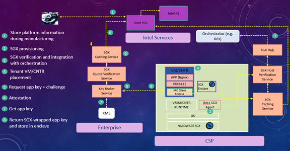

Intel® Security Libraries - Datacenter SGX Attestation Infrastructure and Secure Key Caching
Product Guide
January 2020
Revision 3.3.1
Notice: This document contains information on products in the design phase of development. The information here is subject to change without notice. Do not finalize a design with this information.
Intel technologies’ features and benefits depend on system configuration and may require enabled hardware, software, or service activation. Learn more at intel.com, or from the OEM or retailer.
No computer system can be absolutely secure. Intel does not assume any liability for lost or stolen data or systems or any damages resulting from such losses.
You may not use or facilitate the use of this document in connection with any infringement or other legal analysis concerning Intel products described herein. You agree to grant Intel a non-exclusive, royalty-free license to any patent claim thereafter drafted which includes subject matter disclosed herein.
No license (express or implied, by estoppel or otherwise) to any intellectual property rights is granted by this document.
The products described may contain design defects or errors known as errata which may cause the product to deviate from published specifications. Current characterized errata are available on request.
This document contains information on products, services and/or processes in development. All information provided here is subject to change without notice. Contact your Intel representative to obtain the latest Intel product specifications and roadmaps.
Intel disclaims all express and implied warranties, including without limitation, the implied warranties of merchantability, fitness for a particular purpose, and non-infringement, as well as any warranty arising from course of performance, course of dealing, or usage in trade.
Warning: Altering PC clock or memory frequency and/or voltage may (i) reduce system stability and use life of the system, memory and processor; (ii) cause the processor and other system components to fail; (iii) cause reductions in system performance; (iv) cause additional heat or other damage; and (v) affect system data integrity. Intel assumes no responsibility that the memory, included if used with altered clock frequencies and/or voltages, will be fit for any particular purpose. Check with memory manufacturer for warranty and additional details.
Tests document performance of components on a particular test, in specific systems. Differences in hardware, software, or configuration will affect actual performance. Consult other sources of information to evaluate performance as you consider your purchase. For more complete information about performance and benchmark results, visit http://www.intel.com/performance.
Cost reduction scenarios described are intended as examples of how a given Intel- based product, in the specified circumstances and configurations, may affect future costs and provide cost savings. Circumstances will vary. Intel does not guarantee any costs or cost reduction.
Results have been estimated or simulated using internal Intel analysis or architecture simulation or modeling, and provided to you for informational purposes. Any differences in your system hardware, software or configuration may affect your actual performance.
Intel does not control or audit third-party benchmark data or the web sites referenced in this document. You should visit the referenced web site and confirm whether referenced data are accurate.
Intel is a sponsor and member of the Benchmark XPRT Development Community, and was the major developer of the XPRT family of benchmarks. Principled Technologies is the publisher of the XPRT family of benchmarks. You should consult other information and performance tests to assist you in fully evaluating your contemplated purchases.
Copies of documents which have an order number and are referenced in this document may be obtained by calling 1-800-548-4725 or by visiting www.intel.com/design/literature.htm.
Intel, the Intel logo, Intel TXT, and Xeon are trademarks of Intel Corporation in the U.S. and/or other countries.
*Other names and brands may be claimed as the property of others.
Copyright © 2020, Intel Corporation. All Rights Reserved.
Revision History
[[TOC]]
1 Introduction
1.1 Overview
The SGX Attestation infrastructure and Secure Key Caching (SKC) are part of the Intel Security Libraries for datacenter (ISecL-DC). Intel Security Libraries for Datacenter is a collection of software applications and development libraries intended to help turn Intel platform security features into real-world security use cases.
The SGX Attestation infrastructure provides an end to end support for registering SGX hosts and provisioning them with SGX material (PCK certificates) and SGX collateral (security patches information - TCB Information - and Certificate Revocation Lists - CRLs).
The SGX Attestation infrastructure also provides support for generating SGX quotes for SGX enclaves hosted by workloads and verifying them by a remote attesting application. The remote attesting application can also use the SGX Attestation infrastructure to enforce enclave policies (like requiring a specific enclave signer). Optionally, the SGX Attestation Infrastructure allows to integrate with Cloud Orchestrators like Openstack and Kubernetes.
SKC leverages the SGX Attestation Infrastructure to support the Secure Key Caching (SKC) use case.SKC provides the key protection at rest and in-use use case using the Intel Software Guard Extensions technology (SGX). SGX implements the Trusted Execution Environment (TEE) paradigm.
Using the SKC Client -- a set of libraries -- applications can retrieve keys from the ISecL-DC Key Broker Service (KBS) and load them to an SGX-protected memory (called SGX enclave) in the application memory space. KBS performs the SGX enclave attestation to ensure that the application will store the keys in a genuine SGX enclave. Application keys are wrapped with an enclave public key by KBS prior to transferring to the application enclave. Consequently, application keys are protected from infrastructure admins, malicious applications and compromised HW/BIOS/OS/VMM. SKC does not require the refactoring of the application because it supports a standard PKCS#11 interface.
Trusted Execution Environment
A Trusted Execution Environment (TEE) provides a computer secure area where code and data can be loaded with the assurance that their confidentiality and integrity are protected. TEEs have various applications in areas where the confidentiality of the data and the integrity of the code are of the highest importance. One examples of a TEE usage is the protection of sensitive secrets like cryptographic keys and authentication strings. These secrets can be preserved within a TEE, ensuring that they never get exposed to software that is outside of the TEE. Operations involving these secrets can be performed within the TEE, removing the need to ever extract the secrets outside of the TEE. Another example is the processing of data with privacy concerns. This is often the case in financial, healthcare and artificial intelligence (AI) applications. Putting sensitive operations inside a TEE allows organizations to support business processes without compromising the privacy expectations of their customers.
Intel Software Guard Extensions
Intel Software Guard Extensions (SGX) is an Intel platform security feature that implements the TEE paradigm. A portion of RAM called EPC (Enclave Page Cache) is used by applications to load secure isolated areas called SGX enclaves. Code and data inside SGX enclaves are encrypted and only decrypted inside the Intel CPU. From the host application perspective, an SGX enclave looks like a dynamic library. Any part of the application that is not contained in an SGX enclave is considered untrusted while the SGX enclave is considered trusted. Communications between the untrusted part and the trusted part (the SGX enclave) of an application uses a special calls called ECALLS and call from the enclave to the untrusted part of the application use OCALLS. A signed claim called SGX quote can be generated for an enclave. The SGX quote may contain a measurement of the code and the data of the enclave. An SGX quote allows to prove to a remote verifier (relying party) that an application includes the expected SGX enclave.
SGX ECDSA Attestation
SGX ECDSA attestation is the process that allows an application (relying party) to verify that a remote piece of code and data that it's interacting with is contained in a genuine Intel SGX enclave. The remote enclave can generate a signed claim called an SGX quote. A valid SGX quote signature generated on an SGX enabled platform can be chained up to a trusted Intel signing key. The SGX quote contains the measurement of the enclave (MREnclave), the enclave developer's signature (MRSigner), the security patch level of the platform (Trusted Computing Base or TCB) and any user data that the enclave wants to include in the quote. Typically, the user data in an SGX quote contains the hash of the public key part of a public/private key pair generated inside the enclave. The public key is transferred along with the SGX quote to the relying party. The latter generates a Symmetric Wrapping Key (SWK) and wraps it with the public key of the enclave. The wrapped SWK is provisioned into the SGX enclave, which can unwrap it since it has the corresponding private key. The relying party can then provision secrets into the SGX enclave after wrapping them with the SWK. For an enclave to generate an SGX quote, a PCK certificate for the host platform must be obtained from Intel SGX Provisioning Certification Service (PCS).
PCK Certificates Provisioning
To generate an SGX quote for an enclave, a PCK certificate must be obtained from SGX Provisioning Certification Service (PCS). Requiring a workload to retrieve the PCK certificate from Intel PCS at the time of the SGX quote generation can be detrimental to the workload. Network connectivity issues can prevent the connection to Intel PCS. To remove the dependency on network connectivity, the PCK certificates of the data center platforms are fetched before running any workload. This is achieved by extracting SGX related information from the platform using the PCK ID Retrieval tool and pushing it to a Caching Service running in the same data center. The Caching Service then retrieves the PCK certificates of all the platforms that pushed SGX information to it from Intel PCS. Network connectivity issues are not a problem since the Caching Service can retry if needed. When an SGX workload needs its PCK certificate, it can just get it from the Caching Service.
Key Protection
Cryptographic keys are high value assets that must be protected against disclosure and corruption. Key disclosure or corruption expose the key owner to data confidentiality breaches, impersonation and denial of service. The industry has good solutions to protect keys at rest.
A popular solution is to store keys in a central secure Key Management System (KMS), and applications retrieve them at runtime. However, this solution does not protect keys once they are in RAM and used to perform cryptographic operations. Keys in RAM can be disclosed because of software vulnerabilities like Heartbleed or because of memory snapshots. Therefore, keys are not protected in use. This concern can be addressed by having the application send the payload that needs cryptographic processing to the KMS where the processing happens instead. By doing this, the key is never exposed in RAM. However, this solution incurs an overhead caused by the network round trip to the KMS.
Another solution is to store keys in Hardware Security Modules (HSMs)
HSM
A Hardware Security Module or HSM is a separate hardware part that can be attached to a server. HSMs provide APIs to create and load keys. HSMs also support APIs to perform cryptographic operations using keys stored inside them. The typical flow for using an HSM is to create or load a key in the HSM in a secure environment then take the HSM to the server where the workload runs and attach it to this server. The application then performs cryptographic operations using the key inside the HSM. This ensures that the key is never exposed in RAM. Therefore, HSMs protect keys both at rest and in-use. The drawback with HSMs is that they can be a costly hardware add-on to the server, and they require physical access to the server to get attached to it (via the USB port for example).
Most HSMs support the PKCS#11 cryptographic programming interface.
PKCS#11
PKCS#11 is the standard cryptographic programming interface supported by HSMs. The PKCS#11 interface is defined using a C-style definition, but many languages support bindings exist. Although applications can directly use the PKCS#11 programming interface, most applications use other cryptographic interfaces like openssl. Fortunately, openssl supports a PKCS#11 engine mechanism that converts openssl calls to PKCS#11calls. This allows applications written against the openssl cryptographic interface to use an HSM supporting the PKCS#11 interface without code change. Popular applications that use openssl but can still use an HSM to protect the key include Nginx and Apache.
Features
SGX Attestation Infrastructure
The SGX Attestation Infrastructure allows to fetch PCK certificates and SGX collateral from Intel SGX Provisioning Certification Service (PCS). It makes the PCK certificates available to workloads that use the SKC Client, which allows them to generate SGX quotes. The SGX Attestation Infrastructure also includes components that perform the verification of SGX quotes.
SGX Support in Orchestrators
The SGX Attestation Infrastructure can optionally push the SGX information on compute nodes to cloud orchestrators so that SGX workloads (like SKC) can be scheduled on compute nodes that support SGX. Currently, the Kubernetes orchestrator is supported.
Key Protection
SKC leverages the SGX Attestation Infrastructure to protect keys in an SGX enclave at rest and in use. Applications use the SKC Client -- a set of libraries -- to retrieves keys at runtime from KBS. KBS performs an SGX enclave attestation. If the attestation is successful, KBS generates a Symmetric Wrapping Key (SWK), wraps it with the enclave public key and provisions it into the enclave, which can unwrap it since it has the corresponding private key. Application can then be provisioned into the SGX enclave after being wrapped with the SWK. Application keys are therefore never exposed to any software outside of the enclave.
SGX Attestation Infrastructure and SKC Components
The components documented in this section are used by the SGX Attestation Infrastructure and therefore by SKC, which leverages the SGX Attestation Infrastructure. Components that are exclusively used by SKC have (SKC Only) in the corresponding sub-section title.
Certificate Management Service
All the certificates used by SKC services and by the SGX Agent are issued by the Certificate Management Service (CMS). CMS has a root CA certificate and all the SKC services and the SGX Agent certificates chain up to the CMS root CA.
CMS is an infrastructure service and is shared with other Intel® SecL-DC components.
Authentication and Authorization Service
The authentication and authorization for all SKC services and the SGX Agent are centrally managed by the Authentication and Authorization Service (AAS).
AAS is an infrastructure service and is shared with other Intel® SecL-DC components.
SGX Caching Service
The SGX Caching Service (SCS) allows to retrieve the PCK certificates of the data center server platforms from Intel SGX Provisioning Certification Service (PCS). SCS retrieves also platform models collateral. The collateral consists of the security patches (TCBInfo) that have been issued for Intel platform models. Finally, SCS retrieves the Certificate Revocation Lists (CRLs).
Since the Caching Service stores all the TCBInfo of all the platform models in the datacenter, the SGX Quote Verification Service (SQVS) uses it to determine the TCB status of the platforms in the data center.
The SKC Client retrieves its PCK certificate from the Caching Service when it generates an SGX quote.
SCS can be deployed in both Cloud Service Provider (CSP) and tenant environments. In the CSP environment, SCS is used to fetch PCK certificates for compute nodes in the data center. In the tenant environment, it's used to cache SGX collateral information used in verifying SGX quotes.
SGX Host Verification Service
The SGX Host Verification Service (SHVS) collects the SGX information of all the compute nodes in a data center using the SGX Agent. The SGX information consists of SGX discovery information (SGX supported, SGX enabled, FLC enabled and EPC memory size) and SGX platform hardware and software information (Manifest file/encPPID, CPU SVN, ISV SVN, QEID, QEIdentity, PCEID).
SHVS pushes the SGX platform hardware and software information to the SGX Caching Service (SCS), which uses it to get the PCK certificates of the platform from Intel SGX Provisioning Certification Service (PCS). SHVS also uses SCS to determine if the platform is up to date on hardware and security patches (TCB).
SGX Agent
The SGX Agent resides on physical servers and reports on platform SGX-related information to the SGX Host Verification Service (SHVS).
The SGX Agent supports 2 modes: orchestrator (default) and registration-only. In the registration-only mode, the compute nodes SGX information does not get pushed to orchestrators like Kubernetes. In both modes, the SGX attestation flow is supported.
Integration Hub
The Integration Hub (IHUB) allows to support SGX in Kubernetes and Open stack. IHUB pulls the list of hosts details from Kubernetes and then using the host information it pulls the SGX Data from SGX Host Verification Service and pushes it to Kubernetes. IHUB performs these steps on a regular basis so that the most recent SGX information about nodes is reflected in Kubernetes and Openstack. This integration allows Kubernetes and Openstack to schedule VMs and containers that need to run SGX workloads on compute nodes that support SGX. The SGX data that IHUB pushes to Kubernetes consists of SGX enabled/disabled, SGX supported/not supported, FLC enabled/not enabled, EPC memory size, TCB status up to date/not up to date and platform-data expiry time.
Key Broker Service (SKC Only)
The Key Broker Service (KBS) is typically deployed in the tenant environment, not the Cloud Service Provider (CSP) environment. KBS is effectively a policy compliance engine. Its job is to manage key transfer requests from SKC Clients, releasing keys only to those that meet policy requirements. A user admin can create and register keys in KBS. He can also create key policies and assign them to keys. A key policy specifies the conditions that the SKC Client must fulfill for keys that have the policy assigned to them to be released. Most of the information about an SKC Client is contained in the SGX quote that it sends to KBS. The SGX quote also contains a hash of the enclave's public key. KBS gets the public key along the quote so the hash in the quote allows to verify that the public key is genuine. If the SGX quote verification (attestation) is successful, KBS generates a Symmetric Wrapping Key (SWK), wraps it with the enclave public key and provisions it into the enclave, which can unwrap it since it has the corresponding private key. Application can then be provisioned into the SGX enclave after being wrapped with the SWK. Application keys are therefore never exposed to any software outside of the enclave.
KBS is shared with other Intel® SecL-DC components.
SGX Quote Verification Service
The SGX Quote Verification Service (SQVS) is typically deployed in the tenant environment, not the Cloud Service Provider (CSP) environment. SQVS performs the verification of SGX quotes on behalf of KBS. SQVS determines if the SGX quote signature is valid. It also determines if the SGX quote has been generated on a platform that is up to date on security patches (TCB). For the latter, SQVS uses the SGX Caching Service, which caches the SGX collateral information about Intel platform models. SQVS also parses the SGX quote and extracts the entities and returns them to KBS, which can then make additional policy decisions based on the values of the theses entities.
The Workload SGX Dependencies
This is a set of dependencies needed by SGX workloads.
The SKC Client (SKC Only)
The SKC Client refers to a suite of libraries that applications that require key protection must link with. It's comprised of the SKC Library, which is an Intel® SecL-DC component and the Intel Crypto Toolkit. the SKC Client uses the workload SGX dependencies component. The SKC Library supports the PKCS#11 interface and is therefore considered as a PKCS#11 module from the host application perspective. The SKC Library uses Intel Crypto Toolkit to protect keys in an SGX enclave. When a key is requested by the host application, the SKC Library sends a request to the Key Broker Service (KBS) along with an SGX quote that is generated by the Crypto Toolkit. KBS releases the key after verifying the quote and evaluating the attributes contained in the quote. The key policy can also specify conditions that can't be verified with the SGX quote alone.
The SKC Client is typically deployed inside a tenant VM or container. It can also be used on bare metal. In all these deployments, the underlying platform is typically owned by a Cloud Service Provider (CSP) and is considered untrusted.
Definitions, Acronyms, and Abbreviation
SKC -- Secure Key Caching
SGX -- Software Guard Extension
TEE -- Trusted Execution Environment
HSM -- Hardware Security Module
KBS -- Key Broker Service
CSP -- Cloud Service Provider
TEE -- Trusted Execution Environment
PCS -- Provisioning Certification Service
CRLs -- Certificate Revocation Lists
AAS -- Authentication and Authorization Service
SWK -- Symmetric Wrapping Key
CRDs -- Custom Resource Definitions
Architecture Overview
As indicated in the Features section, SKC provides 3 features essentially:
- SGX Attestation Support: this is the feature that CSPs provide to tenants who need to run SGX workloads that require attestation.
-
SGX Support in Orchestrators: this feature allows to discover SGX support in physical servers and related information:
-
SGX supported.
-
SGX enabled.
-
Size of RAM reserved for SGX. It's called Enclave Page Cache (EPC).
-
Flexible Launch Control enabled.
- Key Protection: this is the feature used by tenants using a CSP to run workloads with key protection requirements.
-
The high-level architectures of these features are presented in the next sub-sections.
SGX Attestation Support and SGX Support in Orchestrators
The diagram below shows the infrastructure that CSPs need to deploy to support SGX attestation and optionally, integration with orchestrators (currently only Kubernetes is supported).
The SGX Agent supports 2 modes: orchestrator (default) and registration-only. In the registration-only mode, the compute nodes SGX information does not get pushed to orchestrators like Kubernetes. In both modes, the SGX attestation flow is supported.
In the orchestrator mode, the SGX Agent is registered to the SGX Host Verification Service (SHVS) at installation time. At runtime, SHVS pulls the SGX platform information from the SGX Agent, which gets the SGX information from the platform directly. SHVS then pushes the information to the SGX Caching Service (SCS), which uses it to get the PCK Certificate and other SGX collateral from the Intel SGX Provisioning Certification Service (PCS) and caches them locally. When a workload on the platform needs to generate an SGX Quote, it retrieves the PCK Certificate of the platform from SCS.
In the orchestrator mode, the platform information is made available to Kubernetes via the SGX Hub (IHUB), which pulls it from SHVS and pushes it to the Kubernetes Master using Custom Resource Definitions (CRDs).
In the registration-only mode, the SGX Agent pushes the SGX information directly to the SGX Caching Service and SHVS is not involved in the flow. PCK certificates are obtained and made available to workloads the same way as in the in the orchestrator mode.
The SGX Quote Verification Service (SQVS) allows attesting applications to verify SGX quotes and extract the SGX quote attributes to verify compliance with a user-defined SGX enclave policy. SQVS uses the SGX Caching Service to retrieve SGX collateral needed to verify SGX quotes from the Intel SGX Provisioning Certification Service (PCS). SQVS typically runs in the the attesting application owner network environment. Typically, a separate instance of the SGX Caching Service is set setup in the attesting application owner network environment.

The SGX Agent and the SGX services integrate with the Authentication and Authorization Service (AAS) and the Certificate Management Service (CMS). AAS and CMS are not represented on the diagram for clarity.
Key Protection
Key Protection leverages the SGX Attestation support and optionally, the SGX support in orchestrators.
Key Protection is implemented by the SKC Client -- a set of libraries - which must be linked with a tenant workload, like Nginx, deployed in a CSP environment and the Key Broker Service (KBS) deployed in the tenant's enterprise environment. The SKC Client retrieves the keys needed by the workload from KBS after proving that the key can be protected in an SGX enclave as shown in the diagram below.

Step 6 is optional (keys can be stored in KBS). Keys policies in step 2 are called Key Transfer Policies and are created by an Admin and assigned to Application keys.
Intel® Security Libraries Installation
Building from Source
Intel® Security Libraries is distributed as open source code and must be compiled into installation binaries before installation.
Instructions and sample scripts for building the Intel® SecL-DC components can be found here (Section 1 to 7)
After the components have been built, the installation binaries can be found in the binaries directory created by the build scripts.
For components written in GO (Authentication and Authorization Service, Certificate Management Service, SGXAgent, Integration HUB, Key Broker Service, SGX Caching Service, SGX Quote Verfication Service, SGX Host Verification Service):
\<servicename>/out/\<servicename>.bin
In addition, the build script will produce some sample database scripts that can be used during installation to setup postgres and create database.
Install_pgdb: intel-secl/deployments/installer/install_pgdb.sh
Install_pgscsdb: sgx-caching-service/out/install_pgscsdb.sh
Install_pgshvsdb: sgx-hvs/out/install_pgshvsdb.sh
Hardware Considerations
Supported Hardware
- Intel® Xeon® SP products those support SGX
BIOS Requirements
-
Intel® SGX-TEM BIOS requirements are outlined in the latest Intel® SGX Platforms BIOS Writer's Guide
-
Intel® SGX should be enabled in BIOS menu (Intel® SGX is Disabled by default on Ice Lake).
-
Intel® SGX BIOS requirements include exposing Flexible Launch Control menu.
OS Requirements (Intel® SGX does not supported on 32-bit OS):
- Linux*:\ • RHEL 8.2
Recommended Service Layout
The Intel® SecL-DC services can be installed in a variety of layouts, partially depending on the use cases desired and the OS of the server(s) to be protected. In general, the Intel® SecL-DC applications can be divided into management services that are deployed on the network on the management plane, and host or node components that must be installed on each protected server.
Management services can typically be deployed anywhere with network access to all the protected servers. This could be a set of individual VMs per service; containers; or all installed on a single physical or virtual machine.
Node components must be installed on each protected physical server.
Typically, this is needed for Linux deployments.
For a POC environment, all the management services can be installed on a single machine or VM.
This Includes:
-
Certificate Management Service (CMS)
-
Authentication and Authorization Service (AAS)
-
SGX Caching Service (SCS)
-
SGX Host Verification Service (SHVS)
-
Integration HUB (IHUB)
-
Key Broker Service (KBS) with backend key management
-
SGX Quote Verification Service (SQVS)
SGX Agent & SKC Library needs to be installed on SGX Enabled Machine.
The node components (SGX Agent) must be installed on each protected physical server:
Using the provided Database Installation Script
Install a sample Postgresql 11 database using the script provided in corresponding component. This script will automatically install the Postgresql database and client packages required.
Create the iseclpgdb.env answer file:
ISECL_PGDB_IP_INTERFACES=localhost
ISECL_PGDB_PORT=5432
ISECL_PGDB_SAVE_DB_INSTALL_LOG=true
ISECL_PGDB_CERT_DNS=localhost
ISECL_PGDB_CERT_IP=127.0.0.1
ISECL_PGDB_DBNAME=aasdb
ISECL_PGDB_USERNAME=aasdbuser
ISECL_PGDB_USERPASSWORD=aasdbpassword
Note that the values above assume that the database will be accessed locally. If the database server will be external to the Intel® SecL services, change these values to the hostname or FQDN and IP address where the client will access the database server.
Provisioning the Database
Each Intel® SecL service that uses a database (the Authentication and Authorization Service, the SGX host Verification Service, the SGX caching Service,) requires its own schema and access. The database must be created and initialized. Execute the install_pg(app name).sh script to configure the database.
If a single shared database server will be used for each Intel® SecL service (for example, if all management plane services will be installed on a single VM), run the script multiple times, once for each service that requires a database.
If separate database servers will be used (for example, if the management plane services will reside on separate systems and will use their own local database servers), execute the script on each server hosting a database. The database install scripts use default configuration
AAS: install_pgdb.sh
SCS: install_pgscsdb.sh
SHVS: install_pgshvsdb.sh
Note the dbusername and password will be taken from respective component environment files.
Database Server TLS Certificate
The database client for Intel® SecL services requires the database TLS certificate to authenticate communication with the database server.
If the database server for a service is located on the same server that the service will run on, only the path to this certificate is needed. If the provided Postgres scripts are used, the certificate will be in /usr/local/pgsql/data/server.crt.
If the database server will be run separately from the Intel® SecL service(s), the certificate will need to be copied from the database server to the service machine before installing the Intel® SecL services.
The database client for Intel® SecL services will validate that the Subject Alternative Names in the database server's TLS certificate contain the hostname(s)/IP address(es) that the clients will use to access the database server. If configuring a database without using the provided scripts, ensure that these attributes are present in the database TLS certificate.
Installing the Certificate Management Service
Required For
The CMS is REQUIRED for all use cases.
Supported Operating System
The Intel® Security Libraries Certificate Management Service supports Red Hat Enterprise Linux 8.2.
Recommended Hardware
-
1 vCPUs
-
RAM: 2 GB
-
10 GB
-
One network interface with network access to all Intel® SecL-DC services
Installation
To install the Intel® SecL-DC Certificate Management Service:
-
Copy the Certificate Management Service installation binary to the /root/ directory.
-
Create the cms.env installation answer file for an unattended installation:
AAS_TLS_SAN=\< Comma-Separated list of IPs and hostnames for the AAS>
AAS_API_URL=https://\< Authentication and Authorization Service IP or Hostname>:8444/aas
SAN_LIST=\< Comma-Separated list of IP addresses and hostnames for the CMS>
The SAN list will be used to authenticate the Certificate Signing Request from the AAS to the CMS. Only a CSR originating from a host matching the SAN list will be honored. Later, in the AAS authservice.env installation answer file, this same SAN list will be provided for the AAS installation. These lists must match and must be valid for IPs and/or hostnames used by the AAS system. The SAN list variables also accept the wildcards "?" (for single-character wildcards) and "*" (for multiple-character wildcards) to allow address ranges or multiple FQDNs.
The AAS_API_URL represents the URL for the AAS that will exist after the AAS is installed.
For all configuration options and their descriptions, refer to the Intel® SecL Configuration section on the Certificate Management Service.
- Execute the installer binary.
./cms-v3.3.1.bin
When the installation completes, the Certificate Management Service is available. The services can be verified by running cms status from the command line.
# cms status
After installation is complete, the CMS will output a bearer token to the console. This token will be used with the AAS during installation to authenticate certificate requests to the CMS. If this token expires or otherwise needs to be recreated, use the following command:
cms setup cms_auth_token --force
In addition, the SHA384 digest of the CMS TLS certificate will be needed for installation of the remaining Intel® SecL services. The digest can be obtained using the following command:
cms tlscertsha384
Installing the Authentication and Authorization Service
Required For
The AAS is REQUIRED for all use cases.
Prerequisites
The following must be completed before installing the Authentication and Authorization Service:
-
The Certificate Management Service must be installed and available
-
The Authentication and Authorization Service database must be available
Package Dependencies
The Intel® SecL-DC Authentication and Authorization Service (AAS) requires a Postgresql 11 database. A script (install_pgdb.sh) is provided with the AAS that will automatically add the Postgresql repositories and install/configure a sample database. If this script will not be used, a Postgresql 11 database must be installed by the user before executing the AAS installation.
Supported Operating Systems
The Intel® Security Libraries Authentication and Authorization Service supports Red Hat Enterprise Linux 8.2.
Recommended Hardware
-
1 vCPUs
-
RAM: 2 GB
-
10 GB
-
One network interface with network access to all Intel® SecL-DC services
Installation
Before AAS is installed, Database needs to be created. Use the following commands to install postgres and create AAS DB
dnf -y install https://download.postgresql.org/pub/repos/yum/reporpms/EL-8-x86_64/pgdg-redhat-repo-latest.noarch.rpm
dnf module disable postgresql -y
copy install_pgdb.sh and create_db.sh to /root/ directory
./install_pgdb.sh
./create_db.sh aasdb
To install the AAS, a bearer token from the CMS is required. This bearer token is output at the end of the CMS installation. However, if a new token is needed, simply use the following command from the CMS command line:
cms setup cms_auth_token --force
Create the authservice.env installation answer file in /root/ directory as below:
CMS_BASE_URL=https://< CMS IP or hostname>:8445/cms/v1/
CMS_TLS_CERT_SHA384=<CMS TLS certificate sha384>
AAS_DB_SSLMODE=verify-full
AAS_DB_HOSTNAME=<IP or hostname of database server>
AAS_DB_PORT=<database port number; default is 5432>
AAS_DB_NAME=<database name>
AAS_DB_USERNAME=<database username>
AAS_DB_PASSWORD=<database password>
AAS_DB_SSLCERTSRC=<path to database TLS certificate; the default location is typically /usr/local/pgsql/data/server.crt>
AAS_ADMIN_USERNAME=<username for AAS administrative user>
AAS_ADMIN_PASSWORD=<password for AAS administrative user>
AAS_JWT_TOKEN_DURATION_MINS=2880
SAN_LIST=<comma-separated list of IPs and hostnames for the AAS; this should match the value for the AAS_TLS_SAN in the cms.env file from the CMS installation>
BEARER_TOKEN=<bearer token from CMS installation>
Execute the AAS installer:
./authservice-v3.3.1.bin
Note: the AAS_ADMIN credentials specified in this answer file will have administrator rights for the AAS and can be used to create other users, create new roles, and assign roles to users.
Creating Users
Before deployment is initiated, user account and roles must be generated for each component. Most of these accounts will be service users, used by the various Intel® SecL SKC services to work together.
Creating these required users and roles is facilitated by the scripts in the corresponding components (Refer to dist/linux directory of each component) and needs to be executed before installation of each component.
SCS: scs_aas_curl.sh
SHVS: shvs_aas_curl.sh
SQVS: sqvs_aas_curl.sh
For Key Broker Service and Integration Hub User/Roles creation, Please refer to the appendix section for sample scripts
The output of these scripts is a bearer-token which needs to be updated in the BEARER_TOKEN env variable in the corresponding component’s env file.
Installing the Caching Service
Required For
The SCS is REQUIRED for the following use cases.
Prerequisites (CSP & Enterprise)
The following must be completed before installing the SGX Caching Service
-
The Certificate Management Service must be installed and available
-
The Authentication and Authorization Service must be installed and available
-
User needs to subscribe to Intel\'s Provisioning Certificate Service to obtain an API Key
-
The SGX Caching Service database must be available
Package Dependencies
The Intel® SecL-DC SGX Caching Service (SCS) requires a
Postgresql 11 database. A script (install_pgscsdb.sh) is provided with the SCS
that will automatically add the Postgresql repositories and install/configure a
sample database. If this script will not be used, a Postgresql 11 database
must be installed by the user before executing the SCS installation.
Supported Operating System
The Intel® Security Libraries SGX Caching Service supports Red Hat Enterprise Linux 8.2.
Recommended Hardware
-
4 vCPUs
-
RAM: 8 GB
-
100 GB
-
One network interface with network access to all managed servers. Internet connection is needed for connecting to Intel PCS Server.
Installation
Before SCS is installed, Database needs to be created. Use the following commands to install postgres and create SCS DB
copy install_pgscsdb.sh to /root/ directory
Open ~/iseclpgdb.env and update the ISECL_PGDB_DBNAME with SCS db name, ISECL_PGDB_USERNAME with SCS db username and ISECL_PGDB_USERPASSWORD with SCS db password
./install_pgscsdb.sh
-
Copy the SCS installation binary to the /root/ directory.
-
Create the scs.env installation answer file in /root/ directory as below:
SCS_DB_USERNAME=
SCS_DB_PASSWORD=
SCS_DB_HOSTNAME=
SCS_DB_PORT=
SCS_DB_NAME=
SCS_DB_SSLCERTSRC=
INTEL_PROVISIONING_SERVER=
INTEL_PROVISIONING_SERVER_API_KEY=
SCS_REFRESH_HOURS=
SCS_ADMIN_USERNAME=
SCS_ADMIN_PASSWORD=
CMS_BASE_URL=https://
:8445/cms/v1/ CMS_TLS_CERT_SHA384=
AAS_API_URL=https://
:8444/aas RETRY_COUNT=3
WAIT_TIME=1
SAN_LIST=
BEARER_TOKEN=
BEARER_TOKEN above can be obtained from running scs_aas_curl.sh script below
Execute scs_aas_curl.sh script to create SGX Caching Service user account and roles
cd sgx-caching-service/dist/linux/
./scs_aas_curl.sh
Update the BEARER_TOKEN value in /root/scs.env file
Execute the SCS installer binary:
./scs-v3.3.1.bin
Installing the SGX Host Verification Service
Required For
The SGX Host Verification Service is REQUIRED in the default orchestrator SGX Agent mode.
Prerequisites
The following must be completed before installing the SGX Host Verification Service:
-
The Certificate Management Service must be installed and available
-
The Authentication and Authorization Service must be installed and available
-
The SGX Host Verification Service database must be available
Package Dependencies
The Intel® Security Libraries SGX Host Verification Service requires the following packages and their dependencies:
-
Postgres* client and server 11.6 (server component optional if an external Postgres database is used)
-
Golang packages
If they are not already installed, the SGX Host Verification Service installer attempts to install these automatically using the package manager. Automatic installation requires access to package repositories (the RHEL subscription repositories, the EPEL repository, or a suitable mirror), which may require an Internet connection. If the packages are to be installed from the package repository, be sure to update the repository package lists before installation.
Supported Operating Systems
The Intel® Security Libraries SGX Host Verification Service supports Red Hat Enterprise Linux 8.2.
Recommended Hardware
-
4 vCPUs
-
RAM: 8 GB
-
100 GB
-
One network interface with network access to all managed servers
Installation
Before SHVS is installed, Database needs to be created. Use the following commands to install postgres and create SHVS DB
copy install_pgshvsdb.sh to /root/ directory
Open ~/iseclpgdb.env and update the ISECL_PGDB_DBNAME with SHVS db name, ISECL_PGDB_USERNAME with SHVS db username and ISECL_PGDB_USERPASSWORD with SHVS db password
./install_pgshvsdb.sh
To install the SGX Host Verification Service, follow these steps:
-
Copy the SGX Host Verification Service installation binary to the /root/ directory.
-
Create the shvs.env installation answer file in /root/ directory as below.
A sample minimal shvs.env file is provided below. For all configuration options and their descriptions, refer to the Intel® SecL Configuration section on the SGX Host Verification Service.
SHVS_DB_HOSTNAME=<hostname or IP address to database server>
SHVS_DB_USERNAME=<Database administrative username>
SHVS_DB_PORT=<Database port, default is 5432>
SHVS_DB_PASSWORD=<Database password>
SHVS_DB_NAME=<Database schema>
SHVS_ADMIN_USERNAME=<SGX Host Verification Service username>
SHVS_ADMIN_PASSWORD=<SGX HostVerification Service password>
CMS_TLS_CERT_SHA384=<Certificate Management Service TLS digest>
SHVS_DB_SSLCERTSRC=/usr/local/pgsql/data/server.crt
SHVS_SCHEDULER_TIMER=10
SHVS_HOST_PLATFORM_EXPIRY_TIME=4
SHVS_AUTO_REFRESH_TIMER=120
BEARER_TOKEN=<Installation token from AAS>
AAS_API_URL=https://<Authentication and Authorization Service IP or Hostname>:8444/aas
CMS_BASE_URL=https://<Certificate Management Service IP or Hostname>:8445/cms/v1/
SCS_BASE_URL=https://<SGX Caching Service IP or Hostname>:9000/scs/sgx/
SAN_LIST=<Comma-separated list of IP addresses and hostnames for the SHVS>
BEARER_TOKEN above can be obtained from running shvs_aas_curl.sh script below
Execute shvs_aas_curl.sh script to create SGX Host Verification Service user account and roles
cd sgx-hvs/dist/linux/
./shvs_aas_curl.sh
Update the BEARER_TOKEN value in /root/shvs.env file
Execute the installer binary.
./shvs-v3.3.1.bin
When the installation completes, the SGX Host Verification Service is available. The service can be verified by running shvs status from the SGX Host Verification Service command line.
# shvs status
Installing the SGX Agent
Required for
The SGX Agent is REQUIRED for all use cases.
The SGX Agent supports 2 modes: orchestrator (default) and registration-only. In the registration-only mode, the compute nodes SGX information does not get pushed to orchestrators like Kubernetes. In both modes, the SGX attestation flow is supported.
In the orchestrator mode, SGX Agent is registered with SGX Host Verification Service (SHVS), which then pulls all SGX platform data. SHVS, in turn, pushes the data to the SGX Caching Service (SCS).
In the registration-only mode, the SGX Agent pushes the SGX platform data directly to SCS and SHVS is not involved in the flow.
Prerequisites
-
The following must be completed before installing the SGX Agent:
- Certificate Management Service, Authentication and Authorization Service,SGX Caching Service and SGX Host Verification Service must be installed and available.
Package Dependencies
The Intel® Security Libraries SGX Agent Service requires the following packages and their dependencies:
- Golang packages
Supported Operating Systems
Red Hat Enterprise Linux 8.2.
Recommended Hardware
Intel® Xeon® SP (Ice Lake-SP)
Installation
Copy sgx_agent.tar sgx_agent.sha2 and agent_untar.sh to a directory on SGX Compute node
./agent_untar.sh
Update the following in agent.conf
- IP address for all the services
- Certificate Management Service TLS digest value (CMS running on CSP system)
./deploy_sgx_agent.sh
Installing the SQVS
Required for
SGX ECDSA Attestation / SGX Quote Verification by KBS
Prerequisites
-
The following must be completed before installing the SQVS:
- Certificate Management Service, Authentication and Authorization Service and SGX Caching Service must be installed and available.
Package Dependencies
The Intel® Security Libraries Quote Verification Service requires the following packages and their dependencies:
- Golang packages
Supported Operating Systems
Red Hat Enterprise Linux 8.2.
Recommended Hardware
-
4 vCPUs
-
RAM: 8 GB
-
100 GB
-
One network interface with network access to all managed servers
Installation
To install the SQVS Service, follow these steps:
-
Copy the SQVS installation binary to the ~/root directory
-
Create the sqvs.env installation answer file in /root/ directory as below
A sample minimal sqvs.env file is provided below. For all configuration options and their descriptions, refer to the Configuration section on the SGX Quote Verification Service.
SGX_TRUSTED_ROOT_CA_PATH=< Path where trusted root ca cert for PCS is stored, by default /tmp/trusted_rootca.pem >
SCS_BASE_URL=https://< SCS IP or Hostname >:9000/scs/sgx/certification/v1
SQVS_USERNAME=< SGX Quote Verification Service username >
SQVS_PASSWORD=< SGX Quote Verification Service password >
CMS_TLS_CERT_SHA384=< Certificate Management Service TLS digest >
BEARER_TOKEN=< Installation token >
AAS_API_URL=https://< Authentication and Authorization Service IP or Hostname >:8444/aas
CMS_BASE_URL=https://< Certificate Management Service IP or Hostname >:8445/cms/v1/
SAN_LIST=< *Comma-separated list of IP addresses and hostnames for the SQVS* >
SQVS_NOSETUP=false
SQVS_PORT=12000
SQVS_LOGLEVEL=info
SQVS_INCLUDE_TOKEN=true
BEARER_TOKEN above can be obtained from running sqvs_aas_curl.sh script below
Execute sqvs_aas_curl.sh script to create SGX Verification Service user account and roles
cd sgx-verification-service/dist/linux/
./sqvs_aas_curl.sh
Update the BEARER_TOKEN value in /root/sqvs.env file
- Execute the sqvs installer binary.
sqvs-v3.3.1.bin
When the installation completes, the SGX Quote Verification Service is available. The service can be verified by sqvs status from the sqvs command line.
# sqvs status
Setup K8S Cluster & Deploy Isecl-k8s-extensions
- Setup master and worker node for k8s. Worker node should be setup on SGX host machine. Master node can be any VM machine.
- Please note whatever hostname has been used on worker node while registering SGX_Agent with SHVS, use same node-name in join command.
- Once the master/worker setup is done, follow below steps:
Untar packages and load docker images
- Copy tar output isecl-k8s-extensions-*.tar.gz from build VM binaries folder to /opt/ directory on the Master Node and extract the contents.
cd /opt/
tar -xvzf isecl-k8s-extensions-*.tar.gz
- Load the docker images
cd isecl-k8s-extensions
docker load -i docker-isecl-controller-v*.tar
docker load -i docker-isecl-scheduler-v*.tar
Deploy isecl-controller
- Create hostattributes.crd.isecl.intel.com crd
kubectl apply -f yamls/crd-1.17.yaml
- Check whether the crd is created
kubectl get crds
- Deploy isecl-controller
kubectl apply -f yamls/isecl-controller.yaml
- Check whether the isecl-controller is up and running
kubectl get deploy -n isecl
- Create clusterrolebinding for ihub to get access to cluster nodes
kubectl create clusterrolebinding isecl-clusterrole --clusterrole=system:node --user=system:serviceaccount:isecl:isecl
- Fetch token required for ihub installation and follow below steps to update ihub.env,
kubectl get secrets -n isecl
kubectl describe secret default-token-<name> -n isecl
For IHUB installation, make sure to update below configuration in /root/binaries/env/ihub.env before installing ihub on CSP VM:
- Copy /etc/kubernetes/pki/apiserver.crt from master node to /root on CSP VM. Update KUBERNETES_CERT_FILE.
- Get k8s token in master, using above commands and update KUBERNETES_TOKEN
- Update the value of CRD name
KUBERNETES_CRD=custom-isecl-sgx
Deploy isecl-scheduler
The isecl-scheduler default configuration is provided for common cluster support in isecl-scheduler.yaml.
Variables HVS_IHUB_PUBLIC_KEY_PATH and SGX_IHUB_PUBLIC_KEY_PATH are by default set to default paths.
Please use and set only required variables based on the use case.
For example, if only sgx based attestation is required then remove/comment HVS_IHUB_PUBLIC_KEY_PATH variables.
-
Install cfssl and cfssljson on Kubernetes Control Plane
#Download cfssl to /usr/local/bin/ wget -O /usr/local/bin/cfssl http://pkg.cfssl.org/R1.2/cfssl_linux-amd64 chmod +x /usr/local/bin/cfssl #Download cfssljson to /usr/local/bin wget -O /usr/local/bin/cfssljson http://pkg.cfssl.org/R1.2/cfssljson_linux-amd64 chmod +x /usr/local/bin/cfssljson -
Create tls key pair for isecl-scheduler service, which is signed by k8s apiserver.crt
cd /opt/isecl-k8s-extensions/
chmod +x create_k8s_extsched_cert.sh
./create_k8s_extsched_cert.sh -n "K8S Extended Scheduler" -s "<K8_MASTER_IP>","<K8_MASTER_HOST>" -c /etc/kubernetes/pki/ca.crt -k /etc/kubernetes/pki/ca.key
- After iHub deployment, copy /etc/ihub/ihub_public_key.pem from ihub to /opt/isecl-k8s-extensions/ directory on k8 master vm. Also, copy tls key pair generated in previous step to secrets directory.
mkdir secrets
cp /opt/isecl-k8s-extensions/server.key secrets/
cp /opt/isecl-k8s-extensions/server.crt secrets/
mv /opt/isecl-k8s-extensions/ihub_public_key.pem /opt/isecl-k8s-extensions/sgx_ihub_public_key.pem
cp /opt/isecl-k8s-extensions/sgx_ihub_public_key.pem secrets/
Note: Prefix the attestation type for ihub_public_key.pem before copying to secrets folder.
- Create kubernetes secrets scheduler-secret for isecl-scheduler
kubectl create secret generic scheduler-certs --namespace isecl --from-file=secrets
- Deploy isecl-scheduler
kubectl apply -f yamls/isecl-scheduler.yaml
- Check whether the isecl-scheduler is up and running
kubectl get deploy -n isecl
Configure kube-scheduler to establish communication with isecl-scheduler
- Add scheduler-policy.json under kube-scheduler section, mountPath under container section and hostPath under volumes section in /etc/kubernetes/manifests/kube-scheduler.yaml as mentioned below
spec:
containers:
- command:
- kube-scheduler
- --policy-config-file=/opt/isecl-k8s-extensions/scheduler-policy.json
containers:
volumeMounts:
- mountPath: /opt/isecl-k8s-extensions/
name: extendedsched
readOnly: true
volumes:
- hostPath:
path: /opt/isecl-k8s-extensions/
type:
name: extendedsched
Note: Make sure to use proper indentation and don't delete existing mountPath and hostPath sections in kube-scheduler.yaml.
- Restart Kubelet which restart all the k8s services including kube base schedular
systemctl restart kubelet
- Check if CRD Data is populated
kubectl get -o json hostattributes.crd.isecl.intel.com
Installing the Integration Hub
Note: The Integration Hub is only required to integrate Intel® SecL with third-party scheduler services, such as Kubernetes. The Integration Hub is not required for usage models that do not require Intel® SecL security attributes to be pushed to an integration endpoint.
Required For
The Integration Hub is REQUIRED the default orchestrator SGX Agent mode.
Prerequisites
The Intel® Security Libraries Integration Hub can be run on a VM or on a bare-metal server. The Integration Hub may be installed on the same server (physical or VM) as the SGX Host Verification Service.
-
SGX Caching Service must be installed and available.
-
The SGX Host Verification Service must be installed and available
-
The Authentication and Authorization Service must be installed and available
-
The Certificate Management Service must be installed and available
Package Dependencies
The Intel® SecL Integration Hub requires a number of packages and their dependencies:
- Golang packages
If these are not already installed, the Integration Hub installer attempts to install these packages automatically using the package manager. Automatic installation requires access to package repositories (the RHEL subscription repositories, the EPEL repository, or a suitable mirror), which may require an Internet connection. If the packages are to be installed from the package repository, be sure to update your repository package lists before installation.
Supported Operating Systems
The Intel Security Libraries Integration Hub supports Red Hat Enterprise Linux 8.2.
Recommended Hardware
-
1 vCPUs
-
RAM: 2 GB
-
1 GB free space to install the Integration Hub (database and log space requirements are dependent on the number of managed servers).
-
One network interface with network access to the SGX Host Verification Service.
-
One network interface with network access to any integration endpoints (for example, OpenStack Nova).
Installing the Integration Hub
To install the SGX Integration Hub, follow these steps:
-
Copy the Integration Hub installation binary to the /root/ directory.
-
Create the ihub.env installation answer file in /root/ directory as below
IHUB_SERVICE_USERNAME=< IHUB service user username > IHUB_SERVICE_PASSWORD=< IHUB service user password > ATTESTATION_SERVICE_URL=< https://< SHVS IP or Hostname >:13000/sgx-hvs/v1 ATTESTATION_TYPE=SGX CMS_TLS_CERT_SHA384=< CMS TLS digest > BEARER_TOKEN=< Installation token from AAS > AAS_API_URL=https://< AAS IP or Hostname >:8444/aas CMS_BASE_URL=https://< CMS IP or Hostname >:8445/cms/v1 POLL_INTERVAL_MINUTES=2 TLS_SAN_LIST=< comma separated list of IPs and hostnames for the IHUB > TENANT=< tenant-type e.g. KUBERNETES or OPENSTACK > # Kubernetes Integration Credentials - required for Kubernetes integration only KUBERNETES_URL=< https://< Kubernetes IP >:6443/> KUBERNETES_CRD=custom-isecl-sgx KUBERNETES_TOKEN=< K8S token > KUBERNETES_CERT_FILE =< Path of Kubernetes master node certificate > # OpenStack Integration Credentials - required for OpenStack integration only OPENSTACK_AUTH_URL=<OpenStack Keystone URL; typically http://openstack-ip:5000/> OPENSTACK_PLACEMENT_URL=<OpenStack Nova Placement API URL; typically http://openstack-ip:8778/> OPENSTACK_USERNAME=< OpenStack username > OPENSTACK_PASSWORD=< OpenStack password > - Create Integrated Hub Service user account and Roles. A sample script is provided in the appendix section for reference
Update the BEARER_TOKEN value in the ihub.env file
- Execute the installer binary.
./ihub-v3.3.1.bin
Copy IHUB public key to the master node and restart kubelet.
scp -r /etc/ihub/ihub_public_key.pem <master-node IP>:/opt/isecl-k8s-extensions/
systemctl restart kubelet
Run this command to validate if the data has been pushed to CRD:
kubectl get -o json hostattributes.crd.isecl.intel.com
Run this command to validate that the labels have been populated:
kubectl get nodes --show-labels.
Sample labels:
EPC-Memory=2.0GB,FLC-Enabled=true,SGX-Enabled=true,SGX-Supported=true,SgxTrustExpiry=2020-11-09T08.07.43Z,TCBUpToDate=true
Create sample yml file for nginx workload and add SGX labels to it such as:
apiVersion: v1
kind: Pod
metadata:
name: nginx
labels:
name: nginx
spec:
affinity:
nodeAffinity:
requiredDuringSchedulingIgnoredDuringExecution:
nodeSelectorTerms:
- matchExpressions:
- key: SGX-Enabled
operator: In
values:
- "true"
- key: EPC-Memory
operator: In
values:
- "2.0GB"
containers:
- name: nginx
image: nginx
ports:
- containerPort: 80
Validate if pod can be launched on the node. Run following commands:
kubectl apply -f pod.yml
kubectl get pods
kubectl describe pods nginx
Pod should be in running state and launched on the host as per values in pod.yml. Validate running below commands on sgx host:
docker ps
Integration with OpenStack
OpenStack can now use “Traits” to provide qualitative data about Nova Compute hosts to establish Trait requirements. The Integration Hub continually push SGX data to the OpenStack Traits resources. This means OpenStack scheduler natively supports workload scheduling incorporating SGX Host information, including SGX enabled/disabled, SGX supported/not supported, FLC enabled/not enabled, EPC memory size, TCB status upto date/not. The OpenStack Placement Service will automatically attempt to place images with Trait requirements on compute nodes that have those Traits.
NOTE: This control only applies to instances launched using the OpenStack scheduler, and the Traits functions will not affect manually-launched instances where a specific Compute Node is defined (since this does not use the scheduler at all). Intel SecL-DC uses existing OpenStack interfaces and does not modify OpenStack code. The datacenter owner or OpenStack administrator is responsible for the security of the OpenStack workload scheduling process in general, and Intel recommends following published OpenStack security best practices.
Setting Image Traits Image Traits define the policy for which Traits are required for that instance to be launched on a Nova Compute node.By setting these Traits to “required” the OpenStack scheduler will require the same Traits to be present on a Nova Compute node in order to launch instances. To set the Image Traits for Intel SecL-DC,a specific naming convention is used. This naming convention will match the Traits that the Integration Hub will automatically push to OpenStack. Two types of Traits are currently supported – one Trait is used to require that the Compute Node must be SGX supported and the other Trait is used to require specific SGXkey/value pairs. Required Image trait for SGX Enabled Host:
CUSTOM_ISECL_SGX_ENABLED_TRUE=required
openstack image set --property trait:CUSTOM_ISECL_SGX_ENABLED_TRUE=required <image name>
openstack image show
openstack resource provider list
openstack resource provider trait list <uuid of the host which the openstack resoruce provider lists>
openstack server create --flavor tiny --image <image name> --net vmnet <vm instance name>
openstack server list
openstack image unset --property trait:CUSTOM_ISECL_SGX_ENABLED_TRUE
openstack image unset --property trait:CUSTOM_ISECL_SGX_ENABLED_FALSE
NOTE: This control only applies to instances launched using the OpenStack scheduler and the Traits functions will not affect manually-launched instances where a specific Compute Node is defined (since this does not use the scheduler at all). Intel SecL-DC uses existing OpenStack interfaces and does not modify OpenStack code. The datacenter owner or OpenStack administrator is responsible for the security of the OpenStack workload scheduling process in general and Intel recommends following published OpenStack security best practices.
Installing the Key Broker Service
Required for
The KBS is REQUIRED for
- Storing Application Keys and Verifying the SGX Quote
Prerequisites
The following must be completed before installing the Key Broker:
-
The Authentication and Authorization Service must be installed and available
-
The Certificate Management Service must be installed and available
Package Dependencies
N/A
Supported Operating Systems
supports Red Hat Enterprise Linux 8.2.
Recommended Hardware
NA
Installation
-
Copy the Key Broker installation binary to the /root/ directory.
-
Create the installation answer file kbs.env /root/ directory as below:
KBS_SERVICE_USERNAME=< KBS service user username >
KBS_SERVICE_PASSWORD=< KBS service user password >
SERVER_PORT=9443
AAS_API_URL=https://
:8444/aas CMS_BASE_URL=https://
:8445/cms/v1/ SQVS_URL=https://
:12000/svs/v1 KEY_MANAGER=Directory
ENDPOINT_URL=https://kbshostname:9443/v1
TLS_COMMON_NAME="KBS TLS Certificate"
SKC_CHALLENGE_TYPE="SGX"
CMS_TLS_CERT_SHA384=
TLS_SAN_LIST=
BEARER_TOKEN=
BEARER_TOKEN above can be obtained form Step 3 below
-
Create Key Broker Service user account and Roles. A sample script is provided in the appendix section for reference
-
Execute the KBS installer.
./kbs-3.3.0.bin
Installing the SKC Library
Required For
The SKC_Library enables secure transfer of application keys from KBS after performing SGX attestation. It stores the keys in the SGX enclave and performs crypto operations ensuring the keys are never exposed in use, at rest and in transit outside of enclave.
Package Dependencies
The Intel® Security Libraries SKC Library requires the following packages and their dependencies
Openssl
Curl
Supported Operation System
The Intel® Security Libraries SKC Library supports Red Hat Enterprise Linux 8.2.
Recommended Hardware
-
Icelake Server with SGX enabled in BIOS
-
RAM: 8 GB
-
100 GB
-
One network interface with network access to the Key Broker
Installation
Copy skc_library.tar skc_library.sha2 and skclib_untar.sh to a directory in SGX Compute node
./skclib_untar.sh
Update the IP address for the services mentioned in skc_library.conf (SCS IP Should be set to CSP SCS IP)
./deploy_skc_library.sh
Authentication
Authentication is centrally managed by the Authentication and Authorization Service (AAS). This service uses a Bearer Token authentication method. This service also centralizes the creation of roles and users, allowing much easier management of users, passwords, and permissions across all Intel® SecL-DC services.
To make an API request to an Intel® SecL-DC service, an authentication token is required. API requests must now include an Authorization header with a valid token
The token is issued by AAS and expires after a set amount of time. This token may be used with any Intel® SecL-DC service and will carry the appropriate permissions for the role(s) assigned to the account the token was generated for.
The SKC solution involves AAS deployments for 2 different domains: the CSP domain and the tenant domain. There is no trust relationship between the 2 deployments.
In SKC, the accounts of the SGX Services are created at install time. However, CSP admin users must obtain AAS tokens to invoke admin APIs in the SGX Host Verification Service (SHVS), the SGX Hub, the SGX Caching Service (SCS) and AAS.
Similarly, the tenant admin needs AAS tokens to invoke Create, Read, Update and Delete (CRUD) APIs in KBS and admin APIs in AAS.
The following sections present how to use AAS APIs to create tokens and manage users.
Create Token
To request a new token from the AAS:
POST https://\<AAS IP or hostname>:8444/aas/token
{
\"username\" : \"\<username>\",
\"password\" : \"\<password>\"
}
The response will be a token that can be used in the Authorization header for other requests. The length of time for which the token will be valid is configured on the AAS using the key ~AAS_JWT_TOKEN_DURATION_MINS~ (in the installation answer file during installation) or aas.jwt.token.duration.mins (configured on the AAS after installation). In both cases the value is the length of time in minutes that issued tokens will remain valid before expiring.
User Management
Users in Intel® SecL-DC are centrally managed by the Authentication and Authorization Service (AAS). Any user may be assigned roles for any service, allowing user accounts to be fully defined by the tasks needed
Username and Password Requirement
Passwords have the following constraints:
-
cannot be empty - ie must at least have one character
-
maximum length of 255 characters
Usernames have the following requirements:
-
Format: username[\@host_name[domain]]
-
[\@host_name[domain]] is optional
-
username shall be minimum of 2 and maximum of 255 characters
-
username allowed characters are alphanumeric, ., -, _ - but cannot start with -.
-
Domain name must meet requirements of a host name or fully qualified internet host name
-
(Update it relevant to SKC)
Create User
POST https://\<IP or hostname of AAS>:8444/aas/users
Authorization: Bearer \<token>
{
\"username\" : \"\<username>\",
\"password\" : \"\<password>\"
}
Search User
GET https://\<IP or hostname of AAS>:8444/aas/users?\<parameter>=\<value>
Authorization: Bearer \<token>
Change User Password
PATCH https://\<IP or hostname of AAS>:8444/aas/users/changepassword
{
\"username\": \"\<username>\",
\"old_password\": \"\<old_password>\",
\"new_password\": \"\<new_password>\",
\"password_confirm\": \"\<new_password>\" }
Delete User
DELETE https://\<IP or hostname of AAS>:8444/aas/users/\<User ID>
Authorization: Bearer \<token>
Roles and Permission
Permissions in Intel® SecL-DC are managed by Roles. Roles are a set of predefined permissions applicable to a specific service. Any number of Roles may be applied to a User. While new Roles can be created, each Intel® SecL service defines permissions that are applicable to specific predetermined Roles. This means that only pre-defined Roles will actually have any permissions. Role creation is intended to allow Intel® SecL-DC services to define their permissions while allowing role and user management to be centrally managed on the AAS. When a new service is installed, it will use the Role creation functions to define roles applicable for that service in the AAS.
Create Roles
POST https://\<AAS IP or Hostname>:8444/aas/roles
Authorization: Bearer \<token>
{
\"service\": \"\<Service name>\",
\"name\": \"\<Role Name>\".
"permissions": [\<array of permissions>]
}
-
Service field contains a minimum of 1 and maximum of 20 characters. Allowed characters are alphanumeric plus the special charecters -, _, @, ., ,
-
Name field contains a minimum of 1 and maximum of 40 characters. Allowed characters are alphanumeric plus the special characters -, _, @, ., ,
-
Service and Name fields are mandatory
-
Context field is optional and can contain up to 512 characters. Allowed characters are alphanumeric plus -, _, @, ., ,,=,;,:,*
-
Permissions field is optional and allow up to a maximum of 512 characters.
The Permissions array must a comma-separated list of permissions formatted as resource:action:
Permissions required to execute specific API requests are listed with the API resource and method definitions in the API documentation.
Search Roles
GET https://\<AAS IP or Hostname>:8444/aas/roles?\<parameter>=\<value>
Authorization: Bearer \<token>
Search parameters supported:
Service=\<name of service>
Name=\<role name>
Context=\<context>
contextContains=\<partial "context" string>
allContexts=\<true or false> filter=false
Delete Role
DELETE https://\<AAS IP or Hostname>:8444/aas/roles/\<role ID> Authorization:
Bearer \<token>
Assign Role to User
POST https://\<AAS IP or Hostname>:8444/aas/users/\<user ID>/roles
Authorization: Bearer \<token>
{
\"role_ids\": [\"\<comma-separated list of role IDs>\"]
}
List Roles Assigned to User
GET https://\<AAS IP or Hostname>:8444/aas/users/\<user ID>/roles
Authorization: Bearer \<token>
Remove Role from User
DELETE https://\<AAS IP or Hostname>:8444/aas/users/\<user ID>/roles/\<role ID>
Authorization: Bearer \<token>
Role Definitions
Following are the set of roles which are required during installation and runtime.
| Role Name | Permissions | Utility |
|---|---|---|
| < SGX_AGENT:HostDataReader: > | Used by the SHVS to retrieve platform data from SGX_Agent | |
| < CMS:CertApprover:CN=SGX_AGENT TLS Certificate;SAN= |
Used by the SGX-AGENT to get TLS certificate from CMS | |
| < SHVS:HostRegistration: > | Used by the SGX_Agent to register host to the SHVS | |
| < SHVS:HostsListReader: > | Used by the IHUB to retrieve the list of hosts from SHVS | |
| < SHVS:HostDataReader: > | Used by the IHUB to retrieve platform-data from SHVS | |
| < CMS:CertApprover:CN=SHVS TLS Certificate;SAN= |
Used by the SHVS to retrieve TLS Certificate from CMS | |
| < CMS:CertApprover:CN=Integration HUB TLS Certificate;SAN= |
Used by the IHUB to retrieve TLS Certificate from CMS | |
| < SCS:HostDataUpdater: > | Used by the SHVS to push the platform-info to SCS | |
| < SCS:HostDataReader: > | Used by the SHVS to retrieve the TCB status info from SCS | |
| < SCS:CacheManager: > | Used by the SCS admin to refresh the platform info | |
| < CMS:CertApprover:CN=SCS TLS Certificate;SAN= |
Used by the SCS to retrieve TLS Certificate from CMS | |
| < KBS:KeyTransfer:permissions=nginx,USA > | Used by the SKC Library user for Key Transfer | |
| < CMS:CertApprover:CN=skcuser;CERTTYPE=TLS-Client> | Used by the SKC Library user to retrieve TLS-Client Certificate from CMS | |
| < CMS:CertApprover:CN=KBS TLS Certificate;SAN= |
Used by the KBS to retrieve TLS Certificate from CMS | |
| AAS: Administrator | ::* | Administrator role for the AAS only. Has all permissions for AAS resources, including the ability to create or delete users and roles |
| AAS: RoleManager | AAS: [roles:create:, roles:retrieve:, roles:search:, roles:delete:] | AAS role that allows all actions for Roles but cannot create or delete Users or assign Roles to Users. |
| AAS: UserManager | AAS: [users:create:, users:retrieve:, users:store:, users:search:, users:delete:*] | AAS role with all permissions for Users but has no ability to create Roles or assign Roles to Users. |
| AAS: UserRoleManager | AAS: [user_roles:create:, user_roles:retrieve:, user_roles:search:, user_roles:delete:] | AAS role with permissions to assign Roles to Users but cannot create delete or modify Users or Roles. |
| < SHVS:HostListManager:> | Used by the SHVS admin to delete the hosts. | |
| < SQVS:QuoteVerifier: > | Used by the KBS service user for quote verification |
Connection Strings
Connection Strings define a remote API resource endpoint that will be used to communicate with the registered host for retrieving SGX information and another platform information. Connection Strings differ based on the type of host.
SGX Agent
The SGX Agent connection string connects directly to the SGX Agent on a given host. The SGX Host Verification Service will use a service account with the needed SGX Agent permissions to connect to the SGX Agent. Authentication has been centralized with the new Authentication and Authorization Service.
SGX Features Provisioning
Host Registration
Host Registration creates a host record with connectivity details and other host information in the SGX host Verification Service database. This host record will be used by the SGX Host Verification Service to retrieve SGX information and platform values from the SGX Agent.
SGX Agent
Host Registration with SGX Agent
The SGX Agent registers the host with an SGX Host Verification Service at the time of installation.
Retrieving Current Host State Information
Admin can get the host state information by calling this rest API. GET https://\<hostname>:13000/sgx-hvs/v1/host-status
Intel Security Libraries Configuration Settings
SGX Host Verification Service
Installation Answer File Options
| Key | Sample Value | Description |
|---|---|---|
| CMS_BASE_URL | https://< IP address or hostname for CMS >:8445/cms/v1/ | Base URL of the CMS |
| AAS_API_URL | https://< IP address or hostname for AAS >:8444/aas | Base URL of the AAS |
| SCS_BASE_URL | https://< IP or hostname of SCS >:9000/scs/sgx/ | Base URL of SCS |
| SHVS_DB_PORT | 5432 | Defines the port number for communication with the database server. By default, with a local database server installation, this port will be set to 5432. |
| SHVS_DB_NAME | pgshvsdb | Defines the schema name of the database. If a remote database connection will be used, this schema must be created in the remote database before installing the SGX Host Verification Service |
| SHVS_DB_USERNAME | aasdbuser | Username for accessing the database. If a remote database connection will be used, this user/password must be created and granted all permissions for the database schema before installing the SGX Host Verification Service. |
| SHVS_DB_PASSWORD | aasdbpassword | Password for accessing the database. If a remote database connection will be used, this user/password must be created and granted all permissions for the database schema before installing the SGX Host Verification Service. |
| SHVS_DB_HOSTNAME | localhost | Defines the database server IP address or hostname. This should be the loopback address for local database server installations but should be the IP address or hostname of the database server if a remote database will be used. |
| SAN_LIST | 127.0.0.1,localhost | Comma-separated list of IP addresses and hostnames that will be valid connection points for the service. Requests sent to the service using an IP or hostname not in this list will be denied, even if it resolves to this service |
| SHVS_ADMIN_USERNAME | shvsuser@shvs | Username for a new user to be created during installation. |
| SHVS_ADMIN_PASSWORD | shvspassword | Password for the user to be created during installation. |
| CMS_TLS_CERT_SHA384 | < Certificate Management Service TLS digest> | SHA384 hash of the CMS TLS certificate |
| BEARER_TOKEN | Installation token from AAS | |
| SHVS_PORT | 13000 | SGX Host Verification Service HTTP Port |
| SHVS_SCHEDULER_TIMER | 60 | SHVS Scheduler timeout |
| SHVS_HOST_PLATFORM_EXPIRY_TIME | 4 | SHVS Host Info Expiry time |
| SHVS_AUTO_REFRESH_TIMER | 120 | SHVS Auto-refresh timeout |
Configuration Options
The SGX Host Verification Service configuration in path /etc/shvs/config.yml.
Command-Line Options
The SGX Host Verification Service supports several command-line commands that can be executed only as the Root user:
Syntax:
shvs \<command>
Help
shvs help
Displays the list of available CLI commands.
Start
shvs start
Starts the SGX Host Verification service
Stop
shvs stop
Stops the SGX Host Verification service
Status
shvs status
Reports whether the service is currently running.
Uninstall
shvs uninstall [--purge]
Removes the service. Use --purge option to remove configuration directory(/etc/shvs/)
Version
shvs version
Shows the version of the service.
Directory Layout
The SGX Host Verification Service installs by default to /opt/shvs with the following folders.
Bin
This folder contains executable scripts.
9.1.4.2 Dbscripts
Contains database scripts.
Other folders which are created during installation are:
Configuration
This folder /etc/shvs contains certificates, keys, and configuration files.
Logs
This folder contains log files: /var/log/shvs/
SGX Agent
Installation Answer File Options
| Key | Sample Value | Description |
|---|---|---|
| AAS_API_URL | https://< AAS IP or Hostname>:8444/aas | API URL for Authentication Authorization Service (AAS). |
| CMS_BASE_URL | https://< CMS IP or hostname>:8445/cms/v1/ | API URL for Certificate Management Service (CMS). |
| SHVS_BASE_URL | https://< SHVS IP or hostname>:13000/sgx-hvs/v1/ | The url used during setup to request information from SHVS. |
| SGX_AGENT_USERNAME | sgx_agent | Name of the SGX_AGENT USER |
| SGX_AGENT_PASSWORD | password | Password of SGX_AGENT user. |
| BEARER_TOKEN | JWT from AAS that contains "install" permissions needed to access ISecL services during provisioning and registration | |
| CMS_TLS_CERT_SHA384 | < Certificate Management Service TLS digest> | SHA384 Hash for verifying the CMS TLS certificate. |
| SGX_PORT | 11001 | The port on which the SGX Agent service will listen. |
| SGX_AGENT_MODE | Orchestration | SGX Agent will operate to work in conjuction with orchstrators like Kubernetes |
| SGX_AGENT_NOSETUP | false | Skips setup during installation if set to true |
| SAN_LIST | 127.0.0.1, localhost | Comma-separated list of IP addresses and hostnames that will be valid connection points for the service. Requests sent to the service using an IP or hostname not in this list will be denied, even if it resolves to this service |
Configuration Options - This is same as above.
Command-Line Options
sgx_agent \<command>
Available Commands
help
Show the help message.
Version
sgx_agent version
Reports the version of the service.
uninstall
sgx_agent uninstall --purge
start
Start the SGX Agent service.
sgx_agent start
stop
Stop the SGX Agent service.
sgx_agent stop
status
Get the status of the SGX Agent Service.
sgx_agent status
Directory Layout
Linux
The Linux SGX Agent installs by default to /opt/sgx_agent, with the following subfolders:
Bin
Contains executables and scripts.
Configuration
Contains the config.yml configuration file.
Integration Hub
Installation Answer File
| Key | sample Value | Description |
|---|---|---|
| AAS_API_URL | https://< Authentication and Authorization Service IP or Hostname>:8444/aas | Base URL for the AAS |
| CMS_BASE_URL | https://< Certificate Management Service IP or Hostname>:8445/cms/v1 | Base URL for the CMS |
| ATTESTATION_SERVICE_URL | https://< SGX Host Verification Service IP or hostname>:13000/sgx-hvs/v1/ | Base URL of SHVS |
| ATTESTATION_TYPE | SGX | For SKC, Attestation Type is always SGX |
| IHUB_SERVICE_USERNAME | ihubuser@ihub | Database username |
| IHUB_SERVICE_PASSWORD | ihubpassword | Database password |
| CMS_TLS_CERT_SHA384 | < Certificate Management Service TLS digest> | SHA384 digest of the CMS TLS certificate |
| BEARER_TOKEN | Installation token | |
| TENANT | KUBERNETES | Tenant Orchaestrator |
| KUBERNETES_URL | https://< Kubernetes Master Node IP or Hostname> :6443 | Kubernetes Master node URL |
| KUBERNETES_CRD | custom-isecl-sgx | CRD Name to be used |
| TLS_SAN_LIST | 127.0.0.1, localhost | Comma-separated list of IP addresses and hostnames that will be valid connection points for the service. Requests sent to the service using an IP or hostname not in this list will be denied, even if it resolves to this service. |
| KUBERNETES_TOKEN | Token from Kubernetes Master Node | |
| KUBERNETES_CERT_FILE | /root/apiserver.crt | Kubernetes server certificate path |
| POLL_INTERVAL_MINUTES | 2 | IHUB Polling Interval in Minutes |
Configuration Options
The Integration Hub configuration can be found in /etc/ihub/config.yml.
Command-Line Options
The Integrtion HUB supports several command-line commands that can be executed only as the Root user:
Syntax:
ihub \<command>
Available Commands
Help
ihub help
Displays the list of available CLI commands
Start
ihub start
Start the service
Stop
ihub stop
stops the service
Status
ihub status
Reports whether the service is currently running.
Uninstall
ihub uninstall [--purge]
Removes the service. Use --purge option to remove configuration directory(/etc/ihub/)
Version
ihub version
Reports the version of the service.
Directory Layout
Logs
The Integration HUB installs by default to /opt/ihub with the following folders.
Bin
This folder contains executable scripts.
Other folders which are created during installation are:
Configuration
This folder /etc/ihub/ contains certificates, keys, and configuration files.
Logs
This folder contains log files: /var/log/ihub/
Certificate Management Service
Installation Answer File Options
| Key | Sample Value | Description |
|---|---|---|
| CMS_PORT | 8445 | Default Port where Certificate Management Service Runs |
| CMS_NOSETUP | false | Determines whether “setup” will be executed after installation. Typically this is set to “false” to install and perform setup in one action. The “true” option is intended for building the service as a container, where the installation would be part of the image build, and setup would be performed when the container starts for the first time to generate any persistent data. |
| AAS_API_URL | https://< AAS Hostname or IP address>:8444/aas/ | URL to connect to the AAS, used during setup for authentication. |
| AAS_TLS_SAN | < Comma-separated list of IPs/hostnames for the AAS> | SAN list populated in special JWT token; this token is used by AAS to get TLS certificate signed from CMS. SAN list in this token and CSR generated by AAS must match. |
Configuration Options
The CMS configuration can be found in /etc/cms/config.yml.
Command-Line Options
Help
cms help
Displays the list of available CLI commands.
Start
cms start
Starts the services.
Stop
cms stop
Stops the service.
Status
cms status
Reports whether the service is currently running.
Uninstall
cms uninstall [--purge]
Uninstalls the service, including the deletion of all files and folders.
Version
cms version
Reports the version of the service.
Tlscertsha384
cms tlscertsha384
Shows the SHA384 digest of the TLS certificate.
setup [task]
Runs a specific setup task.
Available Tasks for setup:
cms setup server [--port=\<port>]
-
Setup http server on \<port>
-
Environment variable CMS_PORT=\<port> can be set alternatively
cms setup root_ca [--force]
-
Create its own self signed Root CA keypair in /etc/cms for quality of life
-
Option [--force] overwrites any existing files, and always generate new Root CA keypair
cms setup tls [--force] [--host_names=\<host_names>]
-
Create its own root_ca signed TLS keypair in /etc/cms for quality of life
-
Option [--force] overwrites any existing files, and always generate root_ca signed TLS keypair
-
Argument \<host_names> is a list of host names used by local machine, seperated by comma
-
Environment variable CMS_HOST_NAMES=\<host_names> can be set alternatively
cms setup cms_auth_token [--force]
-
Create its own self signed JWT keypair in /etc/cms/jwt for quality of life
-
Option [--force] overwrites any existing files, and always generate new
JWT keypair and token
Directory Layout
The Certificate Management Service installs by default to /opt/cms with the following folders.
Bin
This folder contains executable scripts.
Cacerts
This folder contains the CMS root CA certificate.
Authentication and Authorization Service
Installation Answer File Options
| Key | Sample Value | Description |
|---|---|---|
| CMS_BASE_URL | https://< cms IP or hostname>/cms/v1/ | Provides the URL for the CMS. |
| AAS_NOSETUP | false | Determines whether “setup” will be executed after installation. Typically this is set to “false” to install and perform setup in one action. The “true” option is intended for building the service as a container, where the installation would be part of the image build, and setup would be performed when the container starts for the first time to generate any persistent data. |
| AAS_DB_HOSTNAME | localhost | Hostname or IP address of the AAS database |
| AAS_DB_PORT | 5432 | Database port number |
| AAS_DB_NAME | pgdb | Database name |
| AAS_DB_USERNAME | aasdbuser | Database username |
| AAS_DB_PASSWORD | aasdbpassd | Database password |
| AAS_DB_SSLMODE | verify-full | |
| AAS_DB_SSLCERTSRC | /usr/local/pgsql/data/server.crt | Required if the “AAS_DB_SSLMODE” is set to “verify-ca.” Defines the location of the database SSL certificate. |
| AAS_DB_SSLCERT | < path_to_cert_file_on_system > | The AAS_DB_SSLCERTSRC variable defines the source location of the database SSL certificate; this variable determines the local location. If the former option is used without specifying this option, the service will copy the SSL certificate to the default configuration directory. |
| AAS_ADMIN_USERNAME | admin@aas | Defines a new AAS administrative user. This user will be able to create new users, new roles, and new role-user mappings. This user will have the AAS:Administrator role. |
| AAS_ADMIN_PASSWORD | aasAdminPass | Password for the new AAS admin user |
| AAS_JWT_CERT_SUBJECT | "AAS JWT Signing Certificate" | Defines the subject of the JWT signing certificate. |
| AAS_JWT_TOKEN_DURATION | 5 | Defines the amount of time in minutes that an issued token will be valid. |
| SAN_LIST | 127.0.0.1,localhost | Comma-separated list of IP addresses and hostnames that will be valid connection points for the service. Requests sent to the service using an IP or hostname not in this list will be denied, even if it resolves to this service. |
| BEARER_TOKEN | Installation Token from AAS. |
Configuration Options
The AAS configuration can be found in /etc/authservice/config.yml.
Help
Displays the list of available CLI commands.
setup \<task>
Executes a specific setup task. Can be used to change the current configuration.
Available Tasks for setup:
authservice setup all
Runs all setup tasks
authservice setup database [-force] [-arguments=\<argument_value>]
-
Available arguments are:
-
db-host alternatively, set environment variable AAS_DB_HOSTNAME
-
db-port alternatively, set environment variable AAS_DB_PORT
-
db-user alternatively, set environment variable AAS_DB_USERNAME
-
db-pass alternatively, set environment variable AAS_DB_PASSWORD
-
db-name alternatively, set environment variable AAS_DB_NAME
-
db-sslmode \<disable|allow|prefer|require|verify-ca|verify-full> alternatively, set environment variable AAS_DB_SSLMODE
-
db-sslcert path to where the certificate file of database. Only applicable for db-sslmode=\<verify-ca|verify-full. If left empty, the cert will be copied to /etc/authservice/tdcertdb.pem alternatively, set environment variable AAS_DB_SSLCERT
-
db-sslcertsrc \<path to where the database ssl/tls certificate file>
mandatory if db-sslcert does not already exist alternatively, set environment variable AAS_DB_SSLCERTSRC
- Run this command with environment variable AAS_DB_REPORT_MAX_ROWS and AAS_DB_REPORT_NUM_ROTATIONS can update db rotation arguments
authservice setup server [--port=\<port>]
-
Setup http server on \<port>
-
Environment variable AAS_PORT=\<port> can be set alternatively authservice setup tls [--force] [--host_names=\<host_names>]
-
Use the key and certificate provided in /etc/threat-detection if files exist
-
Otherwise create its own self-signed TLS keypair in /etc/authservice for quality of life
-
Option [--force] overwrites any existing files, and always generate self-signed keypair
-
Argument \<host_names> is a list of host names used by local machine, seperated by comma
-
Environment variable AAS_TLS_HOST_NAMES=\<host_names> can be set alternatively
authservice setup admin [--user=\<username>] [-pass=\<password>]
-
Environment variable AAS_ADMIN_USERNAME=\<username> can be set alternatively
-
Environment variable AAS_ADMIN_PASSWORD=\<password> can be set alternatively
authservice setup jwt
-
Create jwt signing key and jwt certificate signed by CMS
-
Environment variable CMS_BASE_URL=\<url> for CMS API url
-
Environment variable AAS_JWT_CERT_CN=\<CERTIFICATE SUBJECT> AAS JWT
Certificate Subject
-
Environment variable AAS_JWT_INCLUDE_KEYID=\<KEY ID> AAS include key id in JWT Token
-
Environment variable AAS_JWT_TOKEN_DURATION_MINS=\<DURATION> JWT Token validation minutes
-
Environment variable BEARER_TOKEN=\<token> for authenticating with CMS
Start
authservice start
Starts the service.
Status
authservice status
Displays the current status of the service.
Stop
authservice stop
Stops the service.
Uninstall
authservice uninstall [--purge]
Removes the service. Use the "--purge" flag to also delete all data.
Version
authservice version
Shows the version of the service.
Directory Layout
The Authendication and Authorization Service installs by default to /opt/authservice with the following folders.
Bin
Contains executable scripts and binaries.
Dbscripts
Contains database scripts.
Key Broker Service
Installation Answer File Options
| Variable Name | Default Value | Notes |
|---|---|---|
| CMS_BASE_URL | https://< CMS IP or hostname >:8445/cms/v1/ | Required for generating TLS certificate |
| AAS_API_URL | https://< AAS IP or hostname >:8444/aas | AAS service url |
| SQVS_URL | https://< SQVS IP or hostname >:12000/svs/v1/ | Required to get the SGX Quote verified |
| CMS_TLS_CERT_SHA384 | < Certificate Management Service TLS digest > | SHA384 digest of CMS TLS certificate |
| BEARER_TOKEN | JWT token for installation user | |
| KBS_SERVICE_USERNAME | admin@kms | KBS Service Username |
| KBS_SERVICE_PASSWORD | kmsAdminPass | KBS Service User Password |
| ENDPOINT_URL | https://kbshostname:9443/v1 | KBS Endpoint URL |
| TLS_COMMON_NAME | KBS TLS Certificate | KBS TLS Certificate common-name |
| SERVER_PORT | 9443 | KBS Secure Port |
| SKC_CHALLENGE_TYPE | SGX | Challenge Type |
| TLS_SAN_LIST | < KBS IP/Hostname > | IP addresses/hostnames to be included in SAN list. |
| KEY_MANAGER | Directory | Key Manager Backend to store keys |
Configuration Options
Command-Line Options
The Key Broker Service supports several command-line commands that can be executed only as the Root user:
Syntax:
kbs \<command>
Start
kbs start
Starts the service
Status
kbs status
Displays the current status of the service.
Stop
kbs stop
Stops the service
Uninstall
kbs uninstall [--purge]
Removes the service
Version
kbs version
Displays the version of the service
Directory Layout
The Key Broker Service installs by default to /opt/kbs with the following folders.
Bin
Contains executable scripts and binaries.
SGX Caching Service
Installation Answer File Options
| Key | Sample Value | Description |
|---|---|---|
| CMS_BASE_URL | https://< CMS IP or hostname >:8445/cms/v1/ | CMS URL for Certificate Management Service |
| AAS_API_URL | https://< AAS IP or hostname >:8444/aas | API URL for Authentication Authorization Service |
| SCS_ADMIN_USERNAME | scsuser@scs | SCS Service username |
| SCS_ADMIN_PASSWORD | scspassword | SCS Service password |
| BEARER_TOKEN | Installation Token from AAS | |
| CMS_TLS_CERT_SHA384 | < Certificate Management Service TLS digest > | SHA384 Hash sum for verifying the CMS TLS certificate. |
| INTEL_PROVISIONING_SERVER | https://sbx.api.trustedservices.intel.com/sgx/certification/v3 | Intel pcs server url |
| INTEL_PROVISIONING_SERVER_API_KEY | < Add your API subscription key > | Intel PCS Server API subscription key |
| SCS_REFRESH_HOURS | 1 hour | Time after which the SGX collaterals in SCS db get refreshed from Intel PCS server |
| RETRY_COUNT | 3 | Number Of times to connect to PCS if PCS service is not accessible |
| WAIT_TIME | 1 | Number Of Seconds between retries to connect to PCS |
| SCS_DB_HOSTNAME | localhost | SCS Databse hostname |
| SCS_DB_PORT | 5432 | SCS Database port |
| SCS_DB_NAME | pgscsdb | SCS Database name |
| SCS_DB_USERNAME | aasdbuser | SCS Database username |
| SCS_DB_PASSWORD | aasdbpassword | SCS Database password |
| SCS_DB_SSLCERTSRC | /usr/local/pgsql/data/server.crt | |
| SAN_LIST | 127.0.0.1,localhost | Comma-separated list of IP addresses and hostnames that will be valid connection points for the service. Requests sent to the service using an IP or hostname not in this list will be denied, even if it resolves to this service. |
Configuration Options
The SGX Caching Service configuration can be found in /etc/scs/config.yml.
Command-Line Options
Help
Displays the list of available CLI commands.
start
scs start
Starts the SGX Caching Service
stop
scs stop
Stops the SGX Caching Service
status
scs status
Reports whether the SGX Caching Service is currently running
uninstall
scs uninstall [--purge]
uninstall the SGX Caching Service. --purge option needs to be applied to remove configuration files
version
scs version
Reports the version of the scs
Directory Layout
The SGX Caching Service installs by default to /opt/scs with the following folders.
Bin
Contains SGX Caching Service executable binary.
Dbscripts
Contains database scripts
SGX Quote Verification
Installation Answer File Options
| Key | Sample Value | Description |
|---|---|---|
| CMS_BASE_URL | https://< CMS IP address or hostname >:8445/cms/v1/ | Defines the base URL for the CMS owned by the image owner. Note that this CMS may be different from the CMS used for other components. |
| AAS_API_URL | https://< AAS IP address or hostname >:8444/aas | Defines the baseurl for the AAS owned by the image owner. Note that this AAS may be different from the AAS used for other components. |
| SCS_BASE_URL | https://< SCS IP address or hostname >:9000/scs/sgx/certification/v1/ | The SCS url is needed. |
| SGX_TRUSTED_ROOT_CA_PATH | /tmp/trusted_rootca.pem | The path to SGX root ca used to verify quote |
| CMS_TLS_CERT_SHA384 | < Certificate Management Service TLS digest > | SHA384 hash of the CMS TLS certificate |
| BEARER_TOKEN | Token from CMS with permissions used for installation. | |
| SQVS_LOG_LEVEL | INFO (default), DEBUG | Defines the log level for the SQVS. Defaults to INFO. |
| SQVS_PASSWORD | sqvsuser@sqvs | Defines the credentials for the SQVS user |
| SQVS_USERNAME | sqvspassword | Defines the credentials for the SQVS User |
| SQVS_PORT | 12000 | SQVS Secure Port |
| SQVS_NOSETUP | false | Skips setup during installation if set to true |
| SAN_LIST | 127.0.0.1,localhost | Comma-separated list of IP addresses and hostnames that will be valid connection points for the service. Requests sent to the service using an IP or hostname not in this list will be denied, even if it resolves to this service. |
| SQVS_INCLUDE_TOKEN | true | If true, SQVS will authenticate KBS before Quote Verifiation |
Configuration Options
The SGX Quote Verification Service configuration can be found in /etc/sqvs/config.yml.
Command-Line Options
The SGX Quote Verifiction Service supports several command-line commands:
Syntax:
sqvs \<command>
Help
Displays the list of available CLI commands.
start
sqvs start
Starts the SGX Quote Verification Service
stop
sqvs stop
Stops the SGX Quote Verification Service
status
sqvs status
Reports whether the SGX Quote Verification Service is currently running.
uninstall
sqvs uninstall [--purge]
uninstalls the SGX Quote Verification Service. --purge option needs to be applied to remove configuration files
version
sqvs version
Reports the version of the sqvs
Uninstallation
This section describes steps used for uninstalling Intel SecL-DC services.
Certificate Management Service
To uninstall the Certificate Management Service, run the following command:
cms uninstall --purge
Removes following directories:
-
/opt/cms
-
/run/cms
-
/var/log/cms
-
/etc/cms
Authentication and Authorization Service
To uninstall the Authentication and Authorization Service, run the following command:
authservice uninstall --purge
Removes following directories:
-
/opt/authservice
-
/run/authservice
-
/var/log/authservice
-
/etc/authservice
SGX Host Verification Service
To uninstall the SGX Host Verification Service, run the following command:
shvs uninstall --purge
Removes following directories:
-
/opt/shvs
-
/run/shvs
-
/var/log/shvs
-
/etc/shvs
SGX_Agent
To uninstall the SGX Agent, run the following command:
sgx_agent uninstall --purge
Removes following directories:
-
/opt/sgx_agent
-
/run/sgx_agent
-
/var/log/sgx_agent
-
/etc/sgx_agent
Integration Hub
To uninstall the Integration Hub, run the following command:
ihub uninstall --purge
Removes the following directories:
-
/opt/ihub
-
/run/ihub
-
/var/log/ihub
-
/etc/ihub
SGX Caching Service
To uninstall the SGX Caching Service , run the following command:
scs uninstall --purge
Removes the following directories:
-
/opt/scs
-
/run/scs
-
/var/log/scs
-
/etc/scs
SGX Quote Verification Service
To uninstall the SGX Quote Verification Service, run the following command:
sqvs uninstall --purge
Removes the following directories:
-
/opt/sqvs
-
/run/sqvs
-
/var/log/sqvs
-
/etc/sqvs
Key Broker Service
kbs uninstall --purge
To uninstall the Key Broker Service , run the following command:
Removes the following directories:
-
/opt/kbs
-
/run/kbs
-
/var/log/kbs
-
/etc/kbs
SKC Library
To uninstall the SKC Library, run the following command:
./opt/skc/devops/scripts/uninstall.sh
Removes the following directories:
/opt/skc
isecl-k8s-extensions
Cluster admin can uninstall the isecl-k8s-extensions by running following commands:
kubectl delete svc isecl-scheduler-svc -n isecl
kubectl delete deployment isecl-controller isecl-scheduler -n isecl
kubectl delete crds hostattributes.crd.isecl.intel.com
rm -rf /opt/isecl-k8s-extensions
rm -rf /var/log/isecl-k8s-extensions
Appendix
Sample Shell script to create KBS user, KBS Roles and mapping KBS user to KBS roles and generating a KBS Token from AAS
Sample Script to create Key Broker Service User account and roles
#!/bin/bash
echo "Setting up Key Broker Service Related roles and user in AAS Database"
source ~/kbs.env 2> /dev/null
aas_hostname=${AAS_API_URL:-"https://<aas.server.com>:8444/aas"}
CURL_OPTS="-s -k"
CONTENT_TYPE="Content-Type: application/json"
ACCEPT="Accept: application/jwt"
red=`tput setaf 1`
green=`tput setaf 2`
reset=`tput sgr0`
mkdir -p /tmp/kbs
tmpdir=$(mktemp -d -p /tmp/kbs)
dnf install -yq jq
Bearer_token=`curl $CURL_OPTS -X POST $aas_hostname/token -d '{"username": "admin@aas", "password": "aasAdminPass" }'`
# This routine checks if kbs user exists and returns user id
# it creates a new user if one does not exist
create_kbs_user()
{
cat > $tmpdir/user.json << EOF
{
"username":"$KBS_SERVICE_USERNAME",
"password":"$KBS_SERVICE_PASSWORD"
}
EOF
#check if kbs user already exists
curl $CURL_OPTS -H "Authorization: Bearer ${Bearer_token}" -o $tmpdir/user_response.json -w "%{http_code}" $aas_hostname/users?name=$KBS_SERVICE_USERNAME > $tmpdir/user-response.status
len=$(jq '. | length' < $tmpdir/user_response.json)
if [ $len -ne 0 ]; then
user_id=$(jq -r '.[0] .user_id' < $tmpdir/user_response.json)
else
curl $CURL_OPTS -X POST -H "$CONTENT_TYPE" -H "Authorization: Bearer ${Bearer_token}" --data @$tmpdir/user.json -o $tmpdir/user_response.json -w "%{http_code}" $aas_hostname/users > $tmpdir/user_response.status
local status=$(cat $tmpdir/user_response.status)
if [ $status -ne 201 ]; then
return 1
fi
if [ -s $tmpdir/user_response.json ]; then
user_id=$(jq -r '.user_id' < $tmpdir/user_response.json)
if [ -n "$user_id" ]; then
echo "${green} Created kbs user, id: $user_id ${reset}"
fi
fi
fi
}
# This routine checks if kbs CertApprover/Administrator/QuoteVerifier roles exist and returns those role ids
# it creates above roles if not present in AAS db
create_roles()
{
cat > $tmpdir/certroles.json << EOF
{
"service": "CMS",
"name": "CertApprover",
"context": "CN=$TLS_COMMON_NAME;SAN=$TLS_SAN_LIST;CERTTYPE=TLS"
}
EOF
cat > $tmpdir/quoteverifyroles.json << EOF
{
"service": "SQVS",
"name": "QuoteVerifier",
"context": ""
}
EOF
#check if CertApprover role already exists
curl $CURL_OPTS -H "Authorization: Bearer ${Bearer_token}" -o $tmpdir/role_response.json -w "%{http_code}" $aas_hostname/roles?name=CertApprover > $tmpdir/role_response.status
cms_role_id=$(jq --arg SAN $TLS_SAN_LIST -r '.[] | select ( .context | ( contains("KBS") and contains($SAN)))' < $tmpdir/role_response.json | jq -r '.role_id')
if [ -z $cms_role_id ]; then
curl $CURL_OPTS -X POST -H "$CONTENT_TYPE" -H "Authorization: Bearer ${Bearer_token}" --data @$tmpdir/certroles.json -o $tmpdir/role_response.json -w "%{http_code}" $aas_hostname/roles > $tmpdir/role_response-status.json
local status=$(cat $tmpdir/role_response-status.json)
if [ $status -ne 201 ]; then
return 1
fi
if [ -s $tmpdir/role_response.json ]; then
cms_role_id=$(jq -r '.role_id' < $tmpdir/role_response.json)
fi
fi
# get admin role id
admin_role_id=`curl $CURL_OPTS $aas_hostname/roles?name=Administrator -H "$CONTENT_TYPE" -H "Authorization: Bearer ${Bearer_token}" | jq -r '.[0].role_id'`
#check if QuoteVerifier role already exists
curl $CURL_OPTS -H "Authorization: Bearer ${Bearer_token}" -o $tmpdir/role_resp.json -w "%{http_code}" $aas_hostname/roles?name=QuoteVerifier > $tmpdir/role_resp.status
len=$(jq '. | length' < $tmpdir/role_resp.json)
if [ $len -ne 0 ]; then
sqvs_role_id=$(jq -r '.[0] .role_id' < $tmpdir/role_resp.json)
else
curl $CURL_OPTS -X POST -H "$CONTENT_TYPE" -H "Authorization: Bearer ${Bearer_token}" --data @$tmpdir/quoteverifyroles.json -o $tmpdir/role_resp.json -w "%{http_code}" $aas_hostname/roles > $tmpdir/role_resp-status.json
local status=$(cat $tmpdir/role_resp-status.json)
if [ $status -ne 201 ]; then
return 1
fi
if [ -s $tmpdir/role_resp.json ]; then
sqvs_role_id=$(jq -r '.role_id' < $tmpdir/role_resp.json)
fi
fi
ROLE_ID_TO_MAP=`echo \"$cms_role_id\",\"$admin_role_id\",\"$sqvs_role_id\"`
}
#Maps kbs user to CertApprover/Administrator/QuoteVerifier Roles
mapUser_to_role()
{
cat >$tmpdir/mapRoles.json <<EOF
{
"role_ids": [$ROLE_ID_TO_MAP]
}
EOF
curl $CURL_OPTS -X POST -H "$CONTENT_TYPE" -H "Authorization: Bearer ${Bearer_token}" --data @$tmpdir/mapRoles.json -o $tmpdir/mapRoles_response.json -w "%{http_code}" $aas_hostname/users/$user_id/roles > $tmpdir/mapRoles_response-status.json
local status=$(cat $tmpdir/mapRoles_response-status.json)
if [ $status -ne 201 ]; then
return 1
fi
}
KBS_SETUP_API="create_kbs_user create_roles mapUser_to_role"
status=
for api in $KBS_SETUP_API
do
eval $api
status=$?
if [ $status -ne 0 ]; then
break;
fi
done
if [ $status -ne 0 ]; then
echo "${red} Key Broking Service user/roles creation failed.: $api ${reset}"
exit 1
else
echo "${green} Key Broking Service user/roles creation succeded ${reset}"
fi
#Get Token for Key Broking Service user and configure it in kbs config.
curl $CURL_OPTS -X POST -H "$CONTENT_TYPE" -H "$ACCEPT" --data @$tmpdir/user.json -o $tmpdir/kbs_token-resp.json -w "%{http_code}" $aas_hostname/token > $tmpdir/get_kbs_token-response.status
status=$(cat $tmpdir/get_kbs_token-response.status)
if [ $status -ne 200 ]; then
echo "${red} Couldn't get bearer token for kbs user ${reset}"
else
export BEARER_TOKEN=`cat $tmpdir/kbs_token-resp.json`
echo "************************************************************************************************************************************************"
echo $BEARER_TOKEN
echo "************************************************************************************************************************************************"
echo "${green} copy the above token and paste it against BEARER_TOKEN in kbs.env ${reset}"
fi
# cleanup
rm -rf $tmpdir
The printed token needs to be added in BEARER_TOKEN section in kbs.env
Sample Script to Create Integrated Hub User account and Roles
#!/bin/bash
echo "Setting up Integration Hub Service Related roles and user in AAS Database"
source ~/ihub.env 2> /dev/null
aas_hostname=${AAS_API_URL:-"https://<aas.server.com>:8444/aas"}
CN="Integration Hub TLS Certificate"
CURL_OPTS="-s -k"
CONTENT_TYPE="Content-Type: application/json"
ACCEPT="Accept: application/jwt"
red=`tput setaf 1`
green=`tput setaf 2`
reset=`tput sgr0`
mkdir -p /tmp/ihub
tmpdir=$(mktemp -d -p /tmp/ihub)
dnf install -yq jq
Bearer_token=`curl $CURL_OPTS -X POST $aas_hostname/token -d '{"username": "admin@aas", "password": "aasAdminPass" }'`
# This routine checks if ihub user exists and returns user id
# it creates a new user if one does not exist
create_ihub_user()
{
cat > $tmpdir/user.json << EOF
{
"username":"$IHUB_SERVICE_USERNAME",
"password":"$IHUB_SERVICE_PASSWORD"
}
EOF
#check if ihub user already exists
curl $CURL_OPTS -H "Authorization: Bearer ${Bearer_token}" -o $tmpdir/user_response.json -w "%{http_code}" $aas_hostname/users?name=$IHUB_SERVICE_USERNAME > $tmpdir/user-response.status
len=$(jq '. | length' < $tmpdir/user_response.json)
if [ $len -ne 0 ]; then
user_id=$(jq -r '.[0] .user_id' < $tmpdir/user_response.json)
else
curl $CURL_OPTS -X POST -H "$CONTENT_TYPE" -H "Authorization: Bearer ${Bearer_token}" --data @$tmpdir/user.json -o $tmpdir/user_response.json -w "%{http_code}" $aas_hostname/users > $tmpdir/user_response.status
local status=$(cat $tmpdir/user_response.status)
if [ $status -ne 201 ]; then
return 1
fi
if [ -s $tmpdir/user_response.json ]; then
user_id=$(jq -r '.user_id' < $tmpdir/user_response.json)
if [ -n "$user_id" ]; then
echo "${green} Created ihub user, id: $user_id ${reset}"
fi
fi
fi
}
# This routine checks if ihub CertApprover/HostsListReader/HostDataReader roles exist and returns those role ids
# it creates above roles if not present in AAS db
create_roles()
{
cat > $tmpdir/certroles.json << EOF
{
"service": "CMS",
"name": "CertApprover",
"context": "CN=$CN;SAN=$TLS_SAN_LIST;CERTTYPE=TLS"
}
EOF
cat > $tmpdir/hostlistreadroles.json << EOF
{
"service": "SHVS",
"name": "HostsListReader",
"context": ""
}
EOF
cat > $tmpdir/hostdatareadroles.json << EOF
{
"service": "SHVS",
"name": "HostDataReader",
"context": ""
}
EOF
#check if CertApprover role already exists
curl $CURL_OPTS -H "Authorization: Bearer ${Bearer_token}" -o $tmpdir/role_response.json -w "%{http_code}" $aas_hostname/roles?name=CertApprover > $tmpdir/role_response.status
cms_role_id=$(jq --arg SAN $TLS_SAN_LIST -r '.[] | select ( .context | ( contains("Integration Hub") and contains($SAN)))' < $tmpdir/role_response.json | jq -r '.role_id')
if [ -z $cms_role_id ]; then
curl $CURL_OPTS -X POST -H "$CONTENT_TYPE" -H "Authorization: Bearer ${Bearer_token}" --data @$tmpdir/certroles.json -o $tmpdir/role_response.json -w "%{http_code}" $aas_hostname/roles > $tmpdir/role_response-status.json
local status=$(cat $tmpdir/role_response-status.json)
if [ $status -ne 201 ]; then
return 1
fi
if [ -s $tmpdir/role_response.json ]; then
cms_role_id=$(jq -r '.role_id' < $tmpdir/role_response.json)
fi
fi
#check if HostsListReader role already exists
curl $CURL_OPTS -H "Authorization: Bearer ${Bearer_token}" -o $tmpdir/role_resp.json -w "%{http_code}" $aas_hostname/roles?name=HostsListReader > $tmpdir/role_resp.status
len=$(jq '. | length' < $tmpdir/role_resp.json)
if [ $len -ne 0 ]; then
ihub_role_id1=$(jq -r '.[0] .role_id' < $tmpdir/role_resp.json)
else
curl $CURL_OPTS -X POST -H "$CONTENT_TYPE" -H "Authorization: Bearer ${Bearer_token}" --data @$tmpdir/hostlistreadroles.json -o $tmpdir/role_resp.json -w "%{http_code}" $aas_hostname/roles > $tmpdir/role_resp-status.json
local status=$(cat $tmpdir/role_resp-status.json)
if [ $status -ne 201 ]; then
return 1
fi
if [ -s $tmpdir/role_resp.json ]; then
ihub_role_id1=$(jq -r '.role_id' < $tmpdir/role_resp.json)
fi
fi
#check if HostDataReader role already exists
curl $CURL_OPTS -H "Authorization: Bearer ${Bearer_token}" -o $tmpdir/role_resp.json -w "%{http_code}" $aas_hostname/roles?name=HostDataReader > $tmpdir/role_resp.status
ihub_role_id2=$(jq -r '.[] | select ( .service | contains("SHVS"))' < $tmpdir/role_resp.json | jq -r '.role_id')
if [ -z $ihub_role_id2 ]; then
curl $CURL_OPTS -X POST -H "$CONTENT_TYPE" -H "Authorization: Bearer ${Bearer_token}" --data @$tmpdir/hostdatareadroles.json -o $tmpdir/role_resp.json -w "%{http_code}" $aas_hostname/roles > $tmpdir/role_resp-status.json
local status=$(cat $tmpdir/role_resp-status.json)
if [ $status -ne 201 ]; then
return 1
fi
if [ -s $tmpdir/role_resp.json ]; then
ihub_role_id2=$(jq -r '.role_id' < $tmpdir/role_resp.json)
fi
fi
ROLE_ID_TO_MAP=`echo \"$cms_role_id\",\"$ihub_role_id1\",\"$ihub_role_id2\"`
}
#Maps ihub user to CertApprover/HostsListReader/HostDataReader Roles
mapUser_to_role()
{
cat >$tmpdir/mapRoles.json <<EOF
{
"role_ids": [$ROLE_ID_TO_MAP]
}
EOF
curl $CURL_OPTS -X POST -H "$CONTENT_TYPE" -H "Authorization: Bearer ${Bearer_token}" --data @$tmpdir/mapRoles.json -o $tmpdir/mapRoles_response.json -w "%{http_code}" $aas_hostname/users/$user_id/roles > $tmpdir/mapRoles_response-status.json
local status=$(cat $tmpdir/mapRoles_response-status.json)
if [ $status -ne 201 ]; then
return 1
fi
}
IHUB_SETUP_API="create_ihub_user create_roles mapUser_to_role"
status=
for api in $IHUB_SETUP_API
do
eval $api
status=$?
if [ $status -ne 0 ]; then
break;
fi
done
if [ $status -ne 0 ]; then
echo "${red} Integration Hub Service user/roles creation failed.: $api ${reset}"
exit 1
else
echo "${green} Integration Hub Service user/roles creation succeded ${reset}"
fi
#Get Token for Integration Hub Service user and configure it in ihub config.
curl $CURL_OPTS -X POST -H "$CONTENT_TYPE" -H "$ACCEPT" --data @$tmpdir/user.json -o $tmpdir/ihub_token-resp.json -w "%{http_code}" $aas_hostname/token > $tmpdir/get_ihub_token-response.status
status=$(cat $tmpdir/get_ihub_token-response.status)
if [ $status -ne 200 ]; then
echo "${red} Couldn't get bearer token for ihub user ${reset}"
else
export BEARER_TOKEN=`cat $tmpdir/ihub_token-resp.json`
echo "************************************************************************************************************************************************"
echo $BEARER_TOKEN
echo "************************************************************************************************************************************************"
echo "${green} copy the above token and paste it against BEARER_TOKEN in ihub.env ${reset}"
fi
# cleanup
rm -rf $tmpdir
The printed token needs to be added in BEARER_TOKEN section in ihub.env
Creating RSA Keys in Key Broker Service
Configuration Update to create Keys in KBS
On the Enterprise VM, where Key broker service is running
cd /root/binaries/kbs_script
Update KBS and AAS IP addresses in run.sh
Update CACERT_PATH variable with trustedca certificate inside directory /etc/kbs/certs/trustedca/<id.pem>.
Create RSA Key
Execute the command
./run.sh reg
- copy the generated cert file to SGX compute node where skc_library is deployed. Also note down the the key id generated
Configuration for NGINX testing
Note: Below mentioned OpenSSL and NGINX configuration updates are provided as patches (nginx.patch and openssl.patch) as part of skc_library deployment script.
OpenSSL Configuration
Update openssl configuration file /etc/pki/tls/openssl.cnf with below changes:
[openssl_def] engines = engine_section
[engine_section] pkcs11 = pkcs11_section
[pkcs11_section] engine_id = pkcs11
dynamic_path =/usr/lib64/engines-1.1/pkcs11.so
MODULE_PATH =/opt/skc/lib/libpkcs11-api.so
init = 0
Nginx Configuration
Update nginx configuration file /etc/nginx/nginx.conf with below changes:
ssl_engine pkcs11;
Update the location of certificate with the location where it was copied into the SGX compute node.
ssl_certificate "add absolute path of crt file";
Update the KeyID with the KeyID received when RSA key was generated in KBS
ssl_certificate_key "engine:pkcs11:pkcs11:token=KMS;id=164b41ae-be61-4c7c-a027-4a2ab1e5e4c4;object=RSAKEY;type=private;pin-value=1234";
SKC Configuration
Create keys.txt in /tmp folder. This provides key preloading functionality in skc_library.
Any number of keys can be added in keys.txt. Each PKCS11 URL should contain different Key IDs which need to be transferred from KBS along with respective object tag for each key id specified
Last PKCS11 url entry in keys.txt should match with the one in nginx.conf
The keyID should match the keyID of RSA key created in KBS. Other contents should match with nginx.conf. File location should match on pkcs11-apimodule.ini;
pkcs11:token=KMS;id=164b41ae-be61-4c7c-a027-4a2ab1e5e4c4;object=RSAKEY;type=private;pin-value=1234;
Sample /opt/skc/etc/pkcs11-apimodule.ini file
[core]
preload_keys=/tmp/keys.txt
keyagent_conf=/opt/skc/etc/key-agent.ini
mode=SGX
debug=true
[SW]
module=/usr/lib64/pkcs11/libsofthsm2.so
[SGX]
module=/opt/intel/cryptoapitoolkit/lib/libp11sgx.so
KBS key-transfer flow validation
On SGX compute node, Execute below commands for KBS key-transfer:
pkill nginx
Remove any existing pkcs11 token
rm -rf /opt/intel/cryptoapitoolkit/tokens/*
Initiate Key tranfer from KBS
systemctl restart nginx
Changing group ownership and permissions of pkcs11 token
groupadd intel
usermod -G intel nginx
chown -R root:intel /opt/intel/cryptoapitoolkit/tokens/
chmod -R 770 /opt/intel/cryptoapitoolkit/tokens/
Establish tls session with the nginx using the key transferred inside the enclave
wget https://localhost:2443 --no-check-certificate